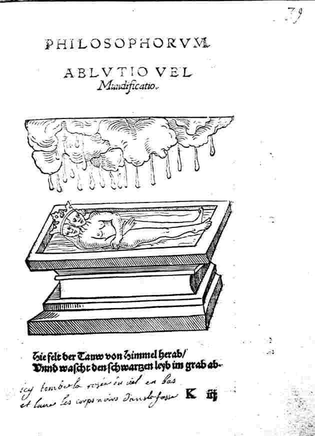
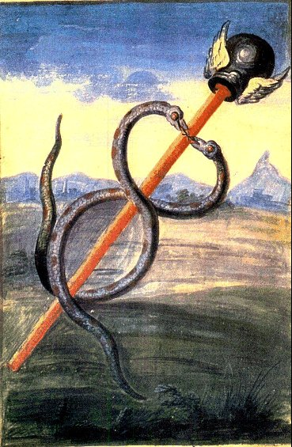
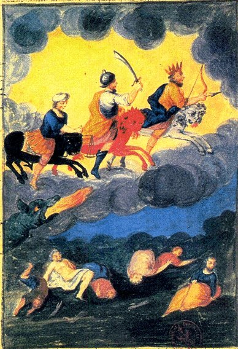
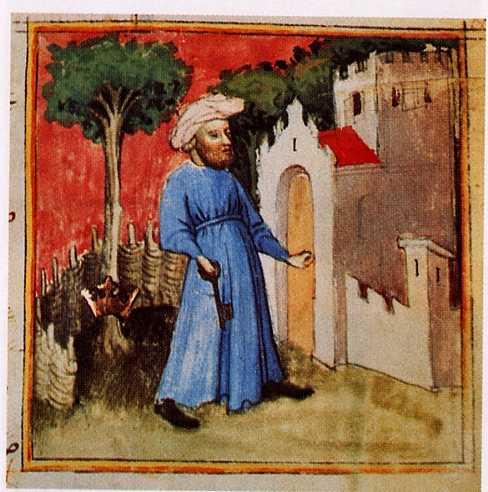
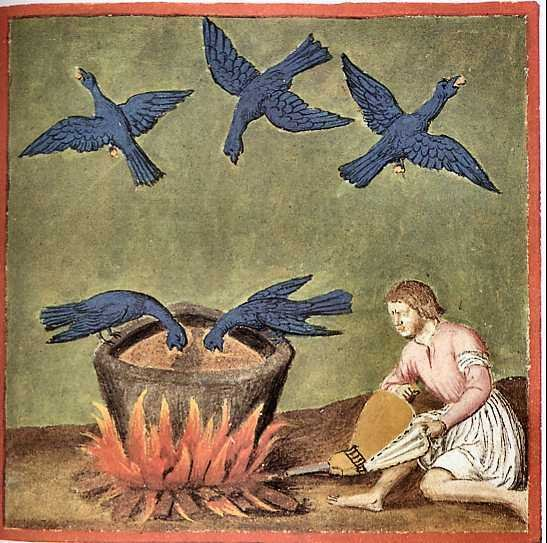

Verba Aristei Patris ad filium
PAROLES D'ARISTÉE À SON
FILS
(originairement en langue Scythe
1)


en cours, le 24 décembre
2004
Abréviations : BCC :
Bibliotheca Chemica Curiosa [Manget] - Ros. Phil. : Rosarium
Philosophorum - ML : Mutus Liber -
plan : Introduction [réflexions sur la
rosée de mai, l'air de l'air et le sel polychreste de Seignette]
- avertissement du Libraire - Lettre d'un Philosophe sur le secret
du Grand oeuvre... - Verba Aristei
Patris ad filium - Notes -
Introduction
Ce petit texte est relativement peu connu; il figure dans un ouvrage
qui fut édité par les soins d'André Toussaint de
Limojon de saint Didier :
 frontispice de la Lettre d'un
philosophe
frontispice de la Lettre d'un
philosophe
Lettre d'un Philosophe, sur le Secret du Grand Oeuvre. Ecrite au sujet
des Instructions qu'Aristée à (sic) laissées
à son Fils, touchant le Magistère Philosophique. Le Nom
de l'Auteur est en Latin dans cet Anagramme-Dives Sicut Ardens, S. A
Paris, Chez Laurent d'Houry, rue S. Iacques, devant la Fontaine S.
Severin, au S. Esprit. M.DC.LXXXVIII. Avec
Privilège du Roy,
12°. Pp. 61 [1 blank]
- Verba Aristei Patris ad filium, p. 43, in Latin and French.
- la Lumière des Mercures,
Extraite de Raymond Lulle, pp. 9 [1].
- Le Chemin du Ciel Chyrmique, Par Jacques
Toll, pp. 31 [1 blank].
Voici des notes de Ferguson sur Limojon [Bibliotheca Chemica, II, pp. 39-40]
:
Limojon
was bom about 1639 at Avignon of a noble family belonging to
Dauphiné. He was écuyer of Jean-Antoine de Mesme, Count
d'Avaux, and he acquired his confidence and esteem to such an extent
that he was entrusted with the execution of many Important matters. He
accompanied the count to the Congress of Nimwegen in 1678, of which he
published an account at Paris, 1680, 12°; to Holland, 1684, when
the count was ambassador, and again when he was ambassador from Louis
XIV, to James II, in Ireland in 1689. Limojon, who was commissioned by
the count to describe to the French King the state of affairs in
Ireland, perished on the return journey. He was Knight of Mount-Camel,
and of St. Lazarus of Jerusalem. Besides the above he wrote a book on
the city and republic of Venice, Amsterdarm, Elzevir, 1680; Paris,
1685; La Haye, 1683, and Le Triomphe Hermétique. "This little
work of 153 pages, curious and much esteemed at a time when chemistry
was in its infancy, has become rare; but one need not much regret it,"
says H.Audiffret. The anagram on the title of the above book, and at
the end of his Letter to the true disciples of Hermes, corresponds
exactly with Sanctus Desi-derius. It is also put as equivalent to
Dydacus Senerius, but it is not exact.
- Lenglet Dufresnoy, Histoire de la Philosophie Hermétique,
1742, iii, p. 315.
- Biographie Universelle, 1819, xxiv. p. 502; no date, xxiv, p. 543
(article by Audiffret).
- Nouvelle Biographie Générale, 1863, xxxi. col. 241
- Ladrague, Bibliothèque Ouvaroff, Sciences Secrètes,
1870, Nos. 1148-1154.
Ce petit ouvrage de soixante et une pages est divisé en deux
parties; la première consiste en une lettre que Limojon adresse
à un personnage inconnu qui doit en savoir déjà
long sur l'Art sacré; assez pour que l'auteur puisse dire qu'il
doit les avoir tous lus. Limojon dit dans cette lettre beaucoup et
notablement plus, même, que maints alchimistes du XIXe
ou du XXe siècle. Les grands auteurs sont plusieurs
fois cités, avec une mention particulière pour le pseudo Basile Valentin et le Cosmopolite [Alexandre Sethon].
Il donne pratiquement le secret de l'oeuvre en énonçant :
« Confiderez qu'il faut une eau
permanante , qui fe congele au feu, tant par elle-même, que
conjointement avec les corps parfaits, après les avoir
radicalement diffouts »
Tout est dit : l'expression aqua permanens donne
à la fois la forme de la matière, le temps qu'il faut
pour la cuire et la disposition du vaisseau. Son devenir aussi, quand
on considère que cette eau divine [udor
qeion] doit être coagulée par sublimation. Sa
substance, qui contient les corps dissous du  et de la
et de la  , c'est-à-dire nos Soufres. Ainsi que le moyen
de parvenir au but : la dissolution des métaux en humide radical, expression
consacrée pour la nigredo
, c'est-à-dire nos Soufres. Ainsi que le moyen
de parvenir au but : la dissolution des métaux en humide radical, expression
consacrée pour la nigredo  [sol niger].
[sol niger].
« Donnez après cela
à la pure rofée, ou à la feule liqueur
tirée de l'air par elle-même, telle préparation,
& telle forme qu'il vous plaira... »
Énigme désespérante de la rosée de mai !
Elle nous rappelle la planche 4 du ML.
 planche 4
du Mutus Liber,
édition de La Rochelle
planche 4
du Mutus Liber,
édition de La Rochelle
Le couple alchimique recueille dans une
large bassine à fond plat le produit de la cueillette
céleste.
« parce que ce sel nitre doit
être parfaitement purifié,
& tel qu’il se trouve partout dans l’air,
séparé des soufres étrangers, de
l’alun, & d’un sel fixe commun, la 4ème Planche semble montrer
que lorsque le Soleil est dans le Signe du Bélier ou du Taureau,
il faut
ramasser sur des linges bien nets la Rosée céleste
imprégnée de ce feu fixe,
& sel solaire, que l’air condensé par la
fraîcheur de la nuit laisse tomber
sur la terre, ainsi qu’une éponge pressée rend
l’eau qu’elle contenait dans ses
pores. » [extrait du Journal des
Sçavants, M. DC. LXXVII. Mutus
liber, in quo tatem tota...]
Nous avons dit ailleurs [
ML,
prima materia] ce que nous
pensons de cette opération allégorique. La rosée
de mai cache la préparation du sel des Sages, envisagé
comme dissolvant : il ne s'agit donc pas du SEL principe

que Jung assimile à l'anima [
Psychologie
du Transfert, trad. Albin Michel, 1980]. La
présence de

et

ne peut laisser aucune équivoque sur la nature
du sel résultant du combat des deux natures [
il ne s'agit pas en l'occurrence du
patiens et de l'agens, évoqués par plusieurs Adeptes,
dont Fulcanelli]. Il faut encore insister sur cette curieuse
remarque de Limojon, touchant à l'extraction «
de la
liqueur de l'air par elle-même ». On sait
que la rosée n'est autre que la résultante d'un
déséquilibre entre la tension de vapeur existant dans
l'air, relativement à sa température et à sa
pression : il en résulte qu'au lieu que l'eau

contenue dans l'air

s'y dissipe, elle va au contraire
précipiter sur terre. C'est un pur effet du refroidissement
occasionné par le rayonnement du calorique. C'est ce qui
explique pourquoi la rosée tombe très-souvent en grande
quantité dans les soirées sereines [
arcana nox], pourquoi aussi
elle est plus rare et moins abondante dans les temps couverts, les
rayons calorifiques de la terre étant remplacés, dans ce
dernier cas, par ceux des couches de nuages situés au-dessus
d'elle. Un vieux chymiste, Christophle Glaser, écrit ceci de la
rosée :
... ils n'en ont iamais fceu
trouver de plus fimple & de plus nuë, & par confequent
plus propre à fe charger de leur fubftance , que la rofée
de May, laquelle on rend plus pure en la diftillant comme s'enfuit.
Prenez quelque quantité de rofée de May , ( laquelle
abonde en efprit fubtil ) & en diftillez en-uiron la moitié
par des cucurbites au bain Marie, ou au fable modérément
chaud , & rectifiez vne fois ce qui eft diftillé, n'en
retirant que la moitié, laquelle vous conferverez dans des
phioles bien bouchées. Cette eau ne fert pas feulement de
menftruë pour les extractions, mais peut auffi fervir de
véhicule à beaucoup de remèdes, qui ont befoin
d'eftre delayez dans quelque liqueur. On peut
trauailler de mefme fur l'eau de pluye , mais il la faut prendre au
mois de Mars, enuiron l'aequinoxe , auquel temps elle eft plus remplie
de l'efprit vniuerfel, qu'en toute autre faifon.. pp. 386-7
Traité de la chymie, enseignant par une briève et facile
méthode toutes ses plus nécessaires préparations,
Paris, Jean d'Houry, 1668
 l'ascension
de l'âme
l'ascension
de l'âme
Pour des explications relatives à
cette figure, voyez l'
Aurora
consurgens, II. Le point intéressant consiste en ce que
Jung, se fiant sans doute trop à la légende qui
accompagne la gravure, intitule son chapitre,
l'Ascension de l'Âme,
alors qu'il faut y voir la sublimation
in spirito du produit de
liquidation des corps dissous dans le Mercurius

, ce qu'indique du reste, expressément, la
† dans
l'idéogramme de l'astre. Dans un temps ultérieur,
contemporain de la coagulation du dissolvant, à l'époque
où Latone touche à Délos [
voir Villa Nova, Epistola ad regem Neapolitam, BCC,
I, pp. 683-687], la rosée retombe de l'air, ce qui
équivaut à l'albedo où la matière est comme
suspendue dans l'
Air des Sages. Cette
époque est illustrée par la
figure
10 du
Ros. Phil.
La troisième époque est celle de l'imbibition ou
humectation de la matière : on peut la situer à la
fermentation, c'est-à-dire lorsque la

se projette dans le signe de la Vierge [
la fermentation est liée
à la cibation; cf. Lait de Vierge].
La technique signalée par l'auteur de l'article Rosée de
l'Encyclopédie se rapproche bien sûr des toiles tendues
dans le
ML [
planches 4
et 9] et des
recipie disposés
pour recevoir la précieuse substance qui devait contenir
l'Esprit universel. L'attention est attirée vers la disposition
du
recipe
vis-à-vis du
, ce qui ne peut que réjouir le
coeur de l'hermétiste. La rosée semble assimilée
à une émanation du corps de la

, ce qui mérite une mention spéciale.
Tout ceci doit évidemment s'entendre par le sens, point avec la
raison : faute de quoi, on passerait à côté de
l'évidence et l'on raterait l'oeuvre. Ce n'est pas tout :
l'environnement est mis en exergue, notamment les sources possibles de
sulphur

[
ce qu'il faut entendre comme
impureté, seule façon de comprendre que le petit corps
qui se dégage dans le Ros.
Phil. - fig. 8, supra - ne saurait
être l'âme mais ce que nous avons nommé un spiritus
abscondus ou corruptus] : les bois [
voyez 20],
les poissons [
17] nous sont bien
connus : Lambsprinck, dans son
De
Lapide Philosophorum [
Musaeum hermeticum, pp. 337-373, 1678],
a fait disposer plusieurs emblèmes que nous avons eu, à
maintes occasions, loisir de contempler et de commenter.
L'édition française d'
Aïon [
trad. Albin Michel, 1983] porte
en vignette l'
emblema I où les
Pisces apparaissent en
compagnie du bateau Argo. Quant aux champs ensemencés, ils
correspondent à ce que les Adeptes ont appelé l'or
enté, c'est-à-dire l'or greffé. On trouve dans
l'iconographie plusieurs représentations de cette
opération [
voir Aurora consurgens, I et Atalanta
fugiens, emblème VI].
ROSÉE, s. f. (Physiq.)
météore aqueux que l'on peut distinguer en trois
espèces, savoir la rosée qui s'élève de la
terre dans l'air, la rosée qui retombe de l'air, & enfin la
rosée que l'on aperçoit sous la forme de gouttes sur les
feuilles des arbres & des plantes. Parcourons ces trois
espèces. 1°. La rosée s'élève de la
terre par l'action du soleil, pendant les mois de l'été ;
le soleil ne produit pas ces effets du premier coup, mais
insensiblement, car aussitôt qu'il paraît au-dessus de
l'horizon, il commence à échauffer la terre & y darde
ses rayons, & sa chaleur continue de s'introduire plus
profondément, jusqu'à une ou deux heures après son
coucher ; c'est alors que la chaleur commence à s'arrêter,
& qu'elle commence à remonter insensiblement.
On peut rassembler la
rosée, en mettant le soir sur la terre, ou un peu au-dessus, des
plaques de métal non polies, ou de grands disques de verre. Si,
après qu'il a fait un jour fort chaud, on place ces plaques dans
un endroit qui ait été bien éclairé du
soleil, la vapeur qui s'élève de la terre se portera
contre la surface inférieure & s'y attachera, & si on
les pose un peu obliquement sur la terre, la rosée
s'écoulera vers le bout inférieur, laissant après
elle les traces qui marquent la route qu'elle a prise ; si au-contraire
on place les plaques dans un endroit qui n'ait pas été
éclairé du soleil, ou qui ne l'ait été que
fort peu, il ne s'y amassera qu'une petite quantité de
rosée.
Lorsqu'on est à la
campagne, & qu'après un jour chaud, on vient à avoir
une soirée froide, on voit sortir des canaux & des
fossés la vapeur de l'eau, qui s'élève en
manière de fumée ; cette vapeur ne se trouve pas
plutôt à la hauteur d'un pied ou de deux, au-dessus de
l'endroit d'où elle part, qu'elle se répand
également de tous côtés ; alors la campagne
paraît bientôt couverte d'une rosée qui
s'élève insensiblement ; elle humecte tous les corps sur
lesquels elle tombe, & mouille les habits de ceux qui s'y
promènent.
La rosée qui
s'élève ne saurait être la même dans les
différentes contrées de la terre. En effet la
rosée se trouvera presque toute composée d'eau dans les
pays aqueux, proche des lacs & des rivières, ou dans le
voisinage de la mer ; mais si la terre est grasse, sulfureuse, pleine
de bois, d'animaux, de poissons, de champs ensemencés, la
rosée sera alors composée de diverses sortes d'huiles, de
sels volatils, & d'esprits subtils des plantes ; si le terrain
contient beaucoup de minéraux, la rosée sera aussi
composée de semblables parties, comme l'observe M.
Boërhaave dans sa chymie. Il s'élève aussi beaucoup
de rosée dans les pays humides & aqueux, & moins dans
les lieux secs & arides, qui sont éloignés de la mer,
des rivières ou des lacs ; ajoutons que la rosée ne monte
pas toujours à la même hauteur ; la plus grande partie
s'arrête fort bas, une autre partie s'élève dans
l'atmosphère, jusqu'à une hauteur moyenne, & la
moindre partie à une grande hauteur.
La rosée
s'étant élevée jusqu'à une certaine
hauteur, flotte lentement dans l'air ; tantôt elle monte,
tantôt elle descend, entourant tous les corps qu'elle trouve
à sa rencontre, & quelquefois elle retombe de l'air pour
humecter la terre. Les philosophes ne s'accordent pas là-dessus,
mais M. Musschenbroeck a fait diverses expériences à cet
égard, qui ne permettent pas de douter de la chute de la
rosée ; on peut les lire dans son essai de physique, §.
1535. Il a fait presque toutes ces expériences sur
l'observatoire de Leyde, au haut duquel on trouve une large
plate-forme, où il a disposé en tout sens des morceaux
d'étoffe, des tonnes, vases, cloches, &c. qui ont tous
reçu de la rosée de l'air.
La rosée ne tombe
pas indifféremment sur toutes sortes de corps ; cette assertion
paraît singulière, & l'habile physicien que nous
venons de citer, a remarqué que les différentes couleurs
attirent la rosée avec une force inégale ;
l'inégalité de leur force attractive dépend de la
structure & de la grandeur des corps colorés.
Il ne tombe point de
rosée lorsqu'il fait un gros vent, parce que tout ce qui monte
de la terre, est d'abord emporté par le vent, & que tout ce
qui s'est élevé dans l'air pendant le jour, est aussi
arrêté & emporté par le vent. Voici quelques
observations de M. Musschenbroeck sur ce sujet. " Quels sont les vents
avec lesquels la rosée tombe, ou quels sont les vents qui
précédent pendant le jour, la chute de la rosée du
soir ? J'ai souvent été surpris de voir tomber de la
rosée avec un vent de nord, parce que ce vent étant froid
dans ce pays, condense la terre, & en ferme les ouvertures ; elle
ne tombe cependant pas si souvent, lorsque ce vent souffle, que
lorsqu'il règne d'autres vents chauds, de sorte qu'on ne ramasse
jamais tant de rosée, que lorsque le vent est sud, sud - ouest,
& sud - est ; c'est ce qu'on remarquait aussi autrefois en
Grèce ; car nous apprenons d'Aristote, qu'il y tombait de la
rosée avec un vent de sud-est ; il n'est pas difficile de rendre
raison de ce phénomène ; le vent est chaud, il ouvre la
terre, il échauffe les vapeurs qui s'élèvent alors
en grande quantité, & peuvent par conséquent retomber
avec abondance, &c. " Loc. cit. §. 1538.
Il tombe beaucoup de
rosée dans le mois de Mai, parce que le soleil met alors en
mouvement une grande quantité de sucs de la terre, & fait
monter beaucoup de vapeurs. La rosée de Mai est plus aqueuse que
celle de l'été, parce que la grande chaleur volatilise
non-seulement l'eau, mais aussi les huiles & les sels.
Aristote, Pline, &
d'autres, ont cru que la rosée tombait la nuit, parce que les
étoiles & la lune la pressaient en bas ; & c'est pour
cela que les philosophes qui sont venus ensuite, ont ajouté que
la rosée tombait en très-grande abondance, lorsque la
lune était pleine, & qu'elle luisait toute la nuit. Ils ont
appelé la lune, la mere de la rosée, (Virg. géorg.
l. III.) & la rosée, la fille de l'air & de la lune.
(Plut. symp. 3.) Cependant on ramasse tout autant de rosée,
& avec la même facilité, dans les nuits où la
lune ne luit pas, qu'à la clarté de cet astre ; &
quelle vertu pourraient avoir les rayons de lumière qui en
partent, puisque si on les reçoit sur le plus grand miroir
ardent, & qu'en les rassemblant dans le foyer, on les y condense
cinq cent fois davantage, ils ne produisent pas le moindre effet sur le
thermomètre le plus mobile. Voyez CHALEUR, LUNE, &c.
On peut distinguer la
rosée d'avec la pluie ; 1°. parce que la pluie est une eau
blanche & claire, au lieu que la rosée est jaune &
trouble ; 2°. en ce que l'eau de pluie pure distillée, n'a
ni odeur ni goût, au lieu que la rosée distillée a
l'un & l'autre.
La troisième
espèce de rosée dont nous avons à parler, porte ce
nom abusivement ; il s'agit de ces gouttes aqueuses que l'on voit
à la pointe du jour sur les feuilles des plantes & des
arbres, après une nuit sèche. On a cru que cette liqueur
tombait de l'air, sur les plantes & sur l'herbe, où elle se
trouve en si grande quantité, qu'on ne saurait traverser le
matin une prairie, sans avoir les pieds tout mouillés. On se
trompe fort à cet égard, car la rosée des plantes
est proprement leur sueur, & par conséquent une humeur qui
leur appartient, & qui sort de leurs vaisseaux excrétoires.
Tantôt on voit ces
gouttes rassemblées proche la tige où commence la
feuille, comme dans les choux & les pavots ; d'autres fois elles se
tiennent sur le contour des feuilles & sur toutes les
éminences, comme cela se remarque, sur-tout dans le cresson
d'Inde ; quelquefois on les voit au milieu de la feuille proche de la
côte ; elles se trouvent aussi assez souvent sur le sommet de la
feuille, comme dans l'herbe des prés, &c. L'origine de cette
rosée peut s'expliquer ainsi, selon M. Musschenbroeck. Lorsque
le soleil échauffe la terre pendant le jour, & qu'il met en
mouvement l'humidité qui s'y trouve, elle s'élève
& s'insinue dans les racines des plantes contre lesquelles elle est
portée ; après que cette humidité s'est une fois
introduite dans la racine, elle continue de monter plus haut, passant
par la tige dans les feuilles, d'où elle est conduite par les
vaisseaux excrétoires, sur la surface, où elle se
rassemble en grande quantité, tandis que le reste demeure dans
la plante ; mais cette humidité se dessèche d'abord
pendant le jour par la chaleur de l'air, de sorte qu'on n'en voit point
du tout pendant le jour sur les feuilles, & comme il ne retourne
alors que peu de liqueur dans la tige & vers la racine, toutes les
plantes paraissent se faner en quelque sorte vers le milieu du jour ;
les liqueurs qui ont été échauffées
continuent de se mouvoir dans la terre pendant la nuit, elles viennent
se rendre de même que pendant le jour contre les racines des
plantes, elles y entrent tout comme auparavant, &
s'élèvent ensuite en haut ; mais les plantes se trouvent
alors toutes entourées d'un air plus froid, lequel
dessèche moins les humeurs, ainsi les sucs qui s'écoulent
des vaisseaux excrétoires, & qui ne se dessèchent pas
après en être sortis, se rassemblent insensiblement, &
prennent la forme de gouttes, qui sont le matin dans toute leur
grosseur, à moins qu'elles ne soient dissipées par le
vent, ou desséchées par la chaleur du soleil levant.
Comme ce sentiment est
nouveau, le même physicien, que nous avons cité dans tout
cet article, s'est attaché à le prouver par diverses
expériences très-exactes, qu'il rapporte §. 1533. de
son essai de physique.
La rosée est saine
ou nuisible aux animaux & aux plantes, selon qu'elle est
composée de parties rondes ou tranchantes, douces ou
âcres, salines ou acides, spiritueuses ou oléagineuses,
corrosives ou terrestres ; c'est pour cela que les médecins
attribuent à la rosée diverses maladies. Vossius,
d'après Thomas Cantipratensis, dans son livre sur les abeilles,
avertit les bergers de ne pas mener paître leurs troupeaux de
grand matin dans les champs qui se trouvent couverts de rosée,
parce que la rosée, qui est extrêmement subtile, s'insinue
dans les viscères, qu'elle met le ventre en mouvement par sa
chaleur, & qu'elle le purge avec tant de violence, que mort
s'ensuit quelquefois. L'avis de Pline, liv. XVIII. c. xxix. ne
paraît pas bien fondé ; il veut que pour empêcher la
rosée d'être nuisible aux terres ensemencées, on
mette le feu au bois, à la paille & aux herbes de la
campagne ou des vignes, parce que cette fumée préviendra
tout le mal qui pourrait arriver ; mais cette fumée ne saurait
produire aucun bon effet, si ce n'est dans les endroits où il y
a des vapeurs & des exhalaisons acides, qui se trouvent alors
tempérées par ce qu'il y a d'alkali dans la fumée.
On dit que la rosée oléagineuse est fort mal-saine,
sur-tout pour les bestiaux, & l'on a observé que
l'année est fort stérile, lorsqu'il tombe beaucoup de
cette rosée. On prétend que dans une certaine
année, les noyers en moururent en Dauphiné, & que les
feuilles des autres plantes en étaient comme
brûlées, de même que le blé & la vigne ;
mais on doit moins attribuer cette malignité à la
rosée, qu'à la trop grande chaleur du soleil. Cet article
est de M. Formey, qui l'a tiré des Essais de physique de M.
Musschenbroeck, déjà cité plusieurs fois dans cet
article.
D'autres points peuvent être remarqués, comme cette
attirance singulière - fausse évidemment - que la
rosée aurait pour certaines couleurs au détriment
d'autres. Toutefois, nous ferons remarquer à nos lecteurs que ce
qui est faux dans le domaine de la réalité consciente,
qui ressortit de la raison, peut se révéler exact sous le
rapport de la réalité inconsciente, qui ressortit du sens
ou pour être plus précis, du sensible [voir Jung, Réponse à Job, trad.
Buchet Chastel]. Dans cette optique, nous sommes en droit si
l'on rapporte la rosée au sens particulier que lui ont
attribué les alchimistes, de reconnaître à notre
menstrue des qualités que ne lui ont jamais connues ou reconnues
les universités. Quel est l'usage réservé que
l'Artiste fait de la rosée ? Nous l'avons dit, elle le sert
comme dissolvant des métaux et des minéraux. On doit
recueillir - voir la planche 4 du ML - ce fruit non
encore mûr alors que le - comprenez la dont n'est pour ainsi dire que le miroir -
tient le milieu entre et  . Il s'agit donc d'un sel et il faut se garder de
prendre cette matière saline pour le SEL des
Sages dont l'hiéroglyphe, rappelons-le, est . Ce sel Nitre, curieusement, est apparu à La
Rochelle, presque en même temps qu'était
édité le ML
: E. Canseliet l'appelle sel isotope de l'arcanum
duplicatum : il a été découvert par Seignette,
apothicaire, vers 1672 [l'édition
originale du ML date de 1677].
. Il s'agit donc d'un sel et il faut se garder de
prendre cette matière saline pour le SEL des
Sages dont l'hiéroglyphe, rappelons-le, est . Ce sel Nitre, curieusement, est apparu à La
Rochelle, presque en même temps qu'était
édité le ML
: E. Canseliet l'appelle sel isotope de l'arcanum
duplicatum : il a été découvert par Seignette,
apothicaire, vers 1672 [l'édition
originale du ML date de 1677].
Né
à La Rochelle, le 4 décembre 1660, Pierre
Seignette est mort dans la même ville le 11
mars 1719. Il était pharmacien dans sa ville natale, maïs
en 1686 il se convertit au catholicisme et, pour prit de son
abjuration, fut admis au Collège des médecins de La
Rochelle. II n'est connu que par la découverte du tartrate de
potasse et de soude, découverte tout accidentelle, qu'il fit
vers 1672. Il exploita longtemps, sous le nom de sel polychreste, ce
composé dont il tint la préparation secrète;
depuis lors le tartrate de potasse et de soudee est connu en chimie et
en médecine sous le nom de sel de Seignette. On a de Seignette
plusieurs brochures, où il exalte les propriétés
merveilleuses de son arcane :
I. Ies principales
utilités et l'usage le plus familier du véritable sel
polychreste. La Rochelle, 16..., in-4". — II. La nature, les
effets et les usages du sel alcali nitreux de Seignette..., in-4°.
— III. Le faux sel polychreste, les utilités de la poudre
polychreste, etc. La Rochelle, 1675, in-8°
L. Hv. Extrait du Dictionnaire
encyclopédique des sciences médicales.
Troisième série. Tome huitième, Scl-Sep, M. A.
Dechambre, Paris, G. Masson, P. Asselin, 1880
Le tartrate double de potasse et de soude est un sel
congénère du tartre
vitriolé. Nous donnons ici un rapport de Boulduc, datant de
1731, qui examinait la nature de ce sel dont l'analyse s'était
jusqu'alors dérobée aux regards des chymistes. Cette
analyse fera voir au scrupuleux rapport qu'en fait Boulduc (Né à Paris le 20
février 1675, mort à Versailles le 17 janvier 1742.
Fils de Simon Boulduc ; élève de Saint-Yon. Apothicaire,
premier apothicaire de Louis XIV, de Louis XV et de la Reine. Consul
(1717), échevin (1720). Il succéda à son
père comme démonstrateur. Membre de l'Académie des
sciences comme élève-chimiste (1699). Ses travaux portent
sur les eaux minérales, les sels de Glauber, d'Epsom et de
Seignette ; voir Chevreul, critique
de Hoefer, II)
maints détails qui peuvent aider à mieux lire, et
comprendre, les vieux traités alchimiques.
SUR
UN SEL CONNU SOUS LE NOM DE POLYCHRESTE
DE SEIGNETTE.
Par M. Boulduc.
ON fe fert depuis nombre
d'années en Médecine d'un fel fous le nom de Polychrefte
de M. Seignette, de la Rochelle, qui en étoit l'auteur, &
dont pendant fa vie il a fait un fecret, lequel a paffé à
fes enfants, fans que jufqu'ici perfonne d'entre les Artiftes en ait
véritablement dévoilé le myflere, les uns ayant
penfé d'une façon, les autres d'une autre, fur la
manière de le faire. Les remèdes, comme les
autres chofes de la vie, ont leur mode, laquelle après avoir
fubfifté un certain temps, plus ou moins long, paffe enfin,
& tombe dans l'oubli ; c'eft un fort, que de très-excellents
remèdes même ont éprouvé, & qui
refteroient encore dans cet oubli, fi quelqu'un par hazard, fouvent peu
verfé dans l'Art & dans la Médecine, ne s'avifoit de
les faire revivre, pour ainfi dire, & de leur donner un nouveau
crédit ; le kermès minéral, entre plufieurs
autres, en eft un exemple. Ce fort n'eft pourtant point tombé
fur le fel Polychrefte : dès que fon auteur l'a annoncé,
& en a publié les vertus, il a pris faveur, & fa
réputation s'eft augmentée de plus en plus &
jufqu'à préfent dans plufieurs parties de l'Europe ;
preuve évidente de la bonté de ce remède. Cette réputation m'a
donné la curiofité de l'examiner, & de tâcher
de découvrir quelle étoit fa compofition.
La première
épreuve que j'en ai faite, a été d'en mettre fur
le charbon allumé ; je l'y ai vu fe fondre, bouillonner, donner
de la fumée, & enfuite laiffer une matière noire
& charbonneufe : de tous ces effets, celui qui m'a
arrêté le plus, a été l'odeur qu'avoit
la fumée qui s'en exhaloit, à laquelle les gens du
métier ne pouvoient fe méprendre ; c'étoit celle
du tartre ou de la crème de tartre, qui eft une même chofe
: je ne m'arrêtai point ni à la fonte, ni au
bouillonnement de ce fel fur le charbon, parce que ce font des
propriétés communes à plusieurs fels, mais je
goûtai le charbon refté après toute la fumée
exhalée } & fur la langue je trouvai qu'il faifoit, à
quelque chofe près, l'impreffion que font nos fels fixes &
lixiviels.
Ces deux propriétés, fçavoir l'odeur du tartre
brûlé & le goût lixiviel, jointes à la
facilité que ce fel a de fe fondre dans l'eau froide, me firent
d'abord penfer, que ce pouvoit être quelque chofe d'approchant du
tartre foluble ; mais je ne m'en tins pas à cette
épreuve, qui me parut trop fuperficielle, & je paffai
à la diftillation. Deux onces de ce fel pouffé au feu par
la cornue, rendirent une liqueur affez claire, & une huile noire
qui nageoit deffus. L'une & l'autre examinées, la liqueur
étoit l'efprit de tartre, & l'huile noire étoit
encore celle qu'on appelle l'empyreumatique ou fétide du
même tartre. Je fis enfuite une pareille diftillation de deux
onces de tartre foluble, & le produit fut le même que de la
diftillation précédente. Jufqu'ici je me trouvai avoir
tout lieu de penfer, que le fel de Seignette & le tartre foluble
n'étoient qu'une même chofe : mais quelques circonftances
me jetterent de nouveau dans le doute de leur différence. Les
deux diftillations, dont je viens de parler, étant faites, je
tournai mes vues du côté des réfidus, &
à l'œil ils me parurent de prime-abord être les
mêmes ; c'étoit une matière noire, charbonneufe,
poreufe, raréfiée, que je regardois comme un tartre
calciné, & dont on ne pourroit retirer qu'un fel fixe alkali
; & en effet, en verfant & fur l'un & fur l'autre de
l'efprit de nitre, l'un & l'autre fermentoit ; cependant le
réfidu du tartre foluble fermentoit en apparence beaucoup plus
vivement que celui du fel de Seignette ; & voulant aller plus
avant, je calcinois féparément l'un & l'autre
réfidus à feu ouvert, & après les avoir fait
diffoudre dans de l'eau & filtrés, je trouvai au
réfidu du tartre foluble un goût fimplement lixiviel,
& fur le filtre une cendre ; mais à l'égard de celui
du fel de Seignette , la leffive avoit quelqu'odeur, fentoit en
quelque façon l'œuf couvi, & étant
filtrée , elle n'avoit point la couleur de l'eau , qu'avoit
celle du tartre foluble, mais une couleur bleuâtre ; & ayant
verfé fur cette folution du vinaigre diftillé, la liqueur
fe troubloit, & précipitoit au bout de quelque temps une
matière blanche & en apparence fulphureufe.
Mais après tous ces effais , il n'y avoit encore rien de certain
pour diftinguer le fel de Seignette d'avec le tartre foluble ordinaire
; & quoique j'euffe eu fouvent de fois occafion de m'entretenir
fur ce fujet avec Mrs Geoffroy , avec lefquels j'ai toujours eu des
liaifons étroites , & qui m'ont bien voulu communiquer
là-deffus leurs idées, j'avoue que je fuis toujours
demeuré dans l'incertitude fur la matière avec laquelle
ce fel pouvoit fe faire : & en mon particulier je ferois
refté dans cette incertitude , peut-être toute ma vie, fi
M. Groffe , mon ami, ne m'avoit un jour ouvert les yeux , en me faifant
part de ce qu'il avoit obfervé en travaillant fur la foude ; il
me fit voir un fel, qui fe féparoit, où fe
dépofoit peu à peu de la folution de cette matière
, & qui , quoiqu'il fut figuré comme un fel de Glauber, ne
laiffa pas de fermenter avec tous les acides, avec les minéraux
en particulier très-vivement, & avec les acides
végétaux plus lentement, comme avec le jus de citron , le
vinaigre & d'autres, mais le plus foiblement avec la crème
de tartre ; cependant quelque lente que fût cette diffolution
avec la crème, à froid s'entend , elle ne laiffoit pas
d'être parfaite au bout de quelque temps ; & M. Groffe ajouta
que ce mélange méritoit d'être examiné par
l'évaporation & la criftallifation. Je faifis cette
idée dans le moment, & je conçus que
ce mélange donneroit une nouvelle efpéce de fel moyen ou
tartre foluble; je me repréfentai même dès-lors que
M. Seignette ayant voulu faire une crème de tartre foluble, qui,
comme l'on fçait, n'eft que le tartre rendu foluble par le fel
alkali fixe du même tartre, a pu croire, comme bien d'autres
Artiftes le croyent encore , que tous les fels alkalis tirés des
plantes par la calcination, font les mêmes, & que le feu ne
leur laiffe rien d'effentiel de la plante dont ils font tirés,
& qu'ainfi on pouvoit indifféremment fubftituer l'un
à l'autre ; & enfin que fuivant ce principe , ayant fort
à la main la foude qui eft le fel du kali calciné, il
pouvoit en faire fon tartre foluble : ce qu'ayant
exécuté, il en avoit retiré un fel qui ne
s'étoit point trouvé être précisément
le tartre foluble ordinaire & connu depuis long-temps, mais un
nouveau fel, ou plutôt une nouvelle efpéce-de crème
de tartre foluble , à laquelle il avoit donné par la
fuite le nom de Polychrefle, parce qu'on en a vu plufieurs bons effets
en Médecine.
Je fuis demeuré dans cette idée encore long-temps fans
l'éprouver, quoique je l'euffe communiquée à
plufieurs perfonnes du métier, lorfque l'occafion s'eft
préfentée d'en parler. Enfin pourtant je me fuis mis en
devoir de l'exécuter , ce que M. Geoffroy de fon
côté a auffi fait dans le même temps , fans que l'un
eût averti l'autre fur fon travail, & nous avons
trouvé tous les deux précifément la même
chofe. Pour faire le fel dont il eft quefîion , on prend la foude
d'alicante la plus calcinée , la plus dure & la plus blanche
, que l'on met en poudre : on en fait une forte leffive en la faifant
bouillir dans l'eau , on filtre cette leffive qui eft
très-limpide. On a féparément de la crème
de tartre en poudre, fur laquelle on verfe de cette leffive
après l'avoir chauffée ; ce mélange excite une
fermentation qui dure fort long-temps & qui même ,
après avoir ceffé quelquefois, fe renouvelle à
plufieurs reprifes ; c'eft dans le temps de cette fermentation, que la
crème de tartre fe diffout ; après quoi il fe fait une
précipitation affez abondante d'une terre grife, fpongieufe
& légère que l'on fépare de la liqueur par le
filtre : on fait enfuite évaporer ce mélange à
lente chaleur jufqu'à un tiers ou environ de fa diminution, puis
on le laiffe en repos dans des terrines , & au bout de quelques
jours on trouve des criftaux tranfparents comme le criftal, & qui
font figurés, lorfqu'ils font libres & non appuyés
fur les vaiffeaux, comme des cylindres ou colomnes , qui dans leurs
longueurs ont plufieurs faces plattes, dont j'ai compté
au-delà de neuf, mais communément elles ne fe trouvent
pas en fi grand nombre.
En mon particulier, je penfe qu'on ne peut pas déterminer
exactement la proportion de la foude & de la crème de tartre
, y ayant des foudes qui contiennent une plus grande quantité de
fel les unes que les autres : mais cette proportion fe trouve bien
naturellement, quand on fait diffoudre à la leffïve autant
de crème de tartre qu'elle en peut prendre , ce qui eft le point
de faturation.
La lefïive de fix livres de foude a pourtant abforbé
communénent deux livres & trois à quatre onces de
crème de tartre : & quand la foude a été bien
blanche & bien chargée de fel , la leffive de fix livres a
quelquefois abforbé prefque poids égal de crème de
tartre : cette différence , comme il eft aifé de penfer ,
ne peut dépendre que de la qualité de la foude plus ou
moins calcinée, & chargée de fel alkali. Mais quand
j'ai pris le Sel qui fe dépofe de la folution ou leffive de la
foude , & dont la configuration imite affez celle du fel de Glauber
, une demi-livre de ce fel diffous, a pris aifémenr treize
à quatorze onces de crème de tartre , & le
mélange n'a prefque point jetté de terre : c'eft
-là la proportion la plus jufte que je puiffe propofer pour les
deux matières qui doivent entrer dans la compofition du
fel Polychrefte : il n'en coûte qu'un peu d'attente pour avoir
les criftaux de la foude , & enfuite le mélange fe fait plus
également, & n'eft point fujet à la
précipitation des différentes matières
hétérogènes que la foude communique à fa
leffive.
Enfin notre fel étant en criftaux , & comparé avec
celui de Seignette auffi criftallifé, fe trouve être
abfolument le même même dans toutes fes circonftances ; ils
font figurés l'un comme l'autre, ils fe fondent très-
aifément dans l'eau froide , lorfqu ils font en poudre ; ils ont
le même goût, & impriment fur la fin quelque
fraîcheur à la langue , mis fur un charbon allumé ,
ils s'y fondent & bouillonnent, i!s exhalent l'odeur du Tartre
brûlé, & fe réduifent à la fin en ce
charbon noir & fpongieux, que donne le Tartre.
Si après cette examen, on doute encore de l'exacte
conformité que notre Sel a avec celui de Seignette, on peut s'en
convaincre par une expérience qui en fait une prompte
décompofition : qu'on diffolve de l'un & de l'autre Sel,
chacun pris féparément, égale quantité dans
de l'eau chaude, & qu'on verfe fur chacun peu à peu de
l'huile de Vitriol blanche, jufqu'à ce qu'elle n'agifle plus ;
à mefure que ces diffolutions fe tiédiffent, il fe forme
une concrétion faline, laquelle examinée eft une
véritable Crème de Tartre en Criftaux ,
régénérée ou féparée de
l'Alkali, tandis que l'huile de Vitriol s'y eft unie , & forme
enfuite, par la criftallifation avec lui, un Sel de Glauber , de la
même façon, que fi on avoit verfé cette huile
immédiatement fur la leffive de la Soude. Le Sel Polychrefte de
Seignette eft donc enfin une Crème de Tartre rendue foluble par
l'Alkali de la Soude.
Peut-on, en vérité, penser qu'il y ait quelque liaison
entre Pierre Seignette et l'édition du ML ? Rien ne le fait
supposer ni dans la littérature spécialisée, ni
dans les supputations des historiens de l'Art sacré. Toutefois,
il est impossible de ne pas remarquer que trois planches, au moins, du ML, se rapportent
expressément à la préparation d'un sel : il s'agit
des planches 5, 6 et 7.
Nous en avons discuté dans l'introduction à
l'étude du ML
et prions donc le lecteur de s'y reporter. D'autres points attirent
l'attention et notamment la relation à l'air
(15).
« Notre feu est un feu corrosif qui recouvre
en quelque sorte l'air au-dessus de notre vaisseau d'un nuage, nuage
dans lequel sont cachées les raies du feu secret, de notre feu
secret. Or l'œuvre n'aboutit à rien en l'absence de cette
rosée du chaos,
de la formation de ce nuage
humide. Almadir ajoute : Si le feu ne réchauffe pas l'or
par une chaleur humide, si les fumées ne montent ni ne
descendent à travers les brumes de la montagne, dans la tempérance et dans
la décence,
nous ne serons dignes ni de la pierre blanche ni de la pierre rouge des
sages. » [Dorneus, Aurora Philosophorum,
Chapitre XIX, Du feu secret et
caché des sages, texte dont l'origine est
douteuse, parfois attribué à Paracelse]

mondification
du Rebis
Les mots soulignés permettent d'expliquer, par la cabale
hermétique, des allusions que Dorneus ne pouvait écrire
contre l'avis des disciples d'Harpocrate (10). Nous
avons déjà
examiné l'arcane voilé par la Tempérance [voir Gobineau
et Gardes du Corps]. La
décence n'est pas recensée dans les Vices et Vertus, sauf
à la placer comme semblable à la Prudence. Mais si l'on
désire explorer sa qualité hermétique,
voilà ce que l'on peut en dire : être décent, c'est
évidemment montrer de la tenue, ce que nous indique euschmosunh,
par la racine scesiV
[action de retenir,
d'arrêter] et scetikoV
qui se rapproche de notre mot styptique [astringent] : c'est nommer le
SEL ou du moins sa substance,
à défaut de sa forme. Dorneus exprime donc, dans ce
passage, que le feu corrosif dont l'Artiste a besoin n'est point un feu
qui détruit mais qui, dans un premier temps, corrompt tout. Du
reste, la nature de ce feu est excellement décrite : Dorneus le
situe in spirito sancto,
qui est la demeure du feu secret ou, si l'on préfère, du
vase de nature. Et cette maison de verre, ce vitri oleum, est ce chaos
où se forme la graisse de rosée par la médiation
du suc de la Lunaire. Chaos où l'on retrouve d'ailleurs la
décence si l'on tient compte que kosmiothV a le sens de
« modération d'esprit », que l'on peut rapprocher de
kosmioV [qui erre ou vit à travers le
monde], terme d'où vient Cosmopolite [kosmopolithV],
étiquette de l'un des plus grands Adeptes de l'histoire : Alexandre Sethon. Du Chaos [KaoV]
à l'Ordre [KosmoV], tel est
l'enseignement élémentaire de la Tabula
Smaragdina. C'est ce que montre la figure 9 du Ros. Phil. : la rosée
spirituelle nutrifie [cibatio]
l'hermaphrodite et lui apporte l'humide radical nécessaire
à sa croissance.
La rosée est évoquée par
le grand Glauber, dans la
Cinquième partie des
Fourneaux philosophiques. D'ailleurs, la
préparation du fourneau dont il parle à cette occasion
est tout à fait particulière.
frontispice des Fourneaux
Philosophiques de Glauber
Quant
à la construction de ce fourneau, il n’est pas
nécessaire d’en dire beaucoup de
choses, d’autant qu’il n’en est pas de même que
des autres, vu qu’il se trouve
par tout bâti des mains propres de la Nature,
n’étant destiné qu’aux opérations
naturelles, pour la confection de quelque menstrue, lequel dissout sans
aucun
bruit l’or, l’argent, tous les autres métaux les
pierres tant communes que
précieuses, & même le verre, l’origine du
fourneau étant l’origine du
menstrue. Il est aisé de conjecturer que ce fourneau produisant
ce menstrue
royal dont il a tiré son origine, n’est pas de ces communs
fourneaux, par le
moyen desquels les autres choses sont distillées vu qu’il
donne ce menstrue non
corrosif & qui à des vertus toutes particulières,
lesquelles ont plus
d’efficace que toutes les eaux corrosives en
général & en particulier. Car
toutes les eaux corrosives telles qu’elles pussent être,
comme l’eau forte,
l’eau royale, l’esprit de vitriol, de sel, d’alun
& de nitre, ne sont pas
capables de dissoudre en une fois l’or & l’argent,
& les autres sujets
durs, & indissolubles par les eaux les plus caustiques.
On voit bien que ce fourneau dont parle Glauber n'est autre que le vase
de nature des alchimistes et que le menstrue royal est notre
rosée de mai. En effet, ce dissolvant n'est point corrosif et
pourtant, il peut dissoudre les pierres (20), tant
communes que précieuses, et jusqu'au verre. Mais quelle est donc
la nature de ce fameux dissolvant ?
Il arrive en ce rencontre, ce
qui arrive
ordinairement, que les choses grandes & splendides sont
méprisées, &
que les petites & communes sont négligées. Ce qui est
contraire au
cours de la Nature, laquelle fait tous ses ouvrages avec
simplicité. La
pauvreté de Jésus Christ choquait les juifs &
quoiqu’ils on vu ses
miracles, toutefois ils ne les croient pas à cause de la
simplicité dont il
agissait & de la forme humaine sans laquelle il ne pouvait pas
être notre
Médiateur envers Dieu. Car par la faute d’Adam nous
étions tellement
séparés de Dieu, & endurcis dans nos pêches,
que nous étions devenus
esclaves de la Mort & de l’enfer ayant perdu le Saint Esprit.
Or par cette
rosée & manne céleste nos cœurs ont
été arrosés, & par la parole, &
par son Sang nous avons recouvert ce Saint Esprit, sans lequel nous ne
l’aurions jamais trouvé. Ainsi comme les Pharisiens &
les Prêtres ne
reconnaissaient pas Jesus Christ à
cause de sa pauvreté, de, même on méprise ce
menstrue universel, parce que
qu’il est par tout, & qu’il se trouve même dans
les ordures. Ne me blâmez
pas d’avoir fait cette comparaison, car elle tourne plutôt
à la gloire de Notre
Seigneur, lequel a pu délivrer le genre humain de la puissance
du Diable, de
même que le mercure ressuscite glorieusement pour le salut du
genre métallique.
La rosée - notre dissolvant - est assimilé au Christ,
dont Jung a signalé les accointances avec le serpent [voir Aurora
consurgens et Ripley Scrowle].
Du reste, Glauber n'anticipe-t-il pas, de même que Gerhard
Dorneus [l'un des principaux
sectateurs de Paracelse, voir Jung, Synchronicité
et Paracelsica, § 4, pp. 223-237] quand il met en
exergue le parallèle entre le Christ et le Mercurius qui ressuscite [peut-être
veut-il parler, d'ailleurs du phénix qui constitue la forme la
plus évoluée du double Mercure] ? De fait, le
pécheur est vu comme le métal imparfait. Le Mercurius
permet la surrection de l'âme plutôt que la
résurrection du corps : voilà une idée qui est
souvent perdue de vue par les disciples d'Hermès auxquels, tel
Limojon, Dorneus s'adresse là [Lettre aux vrais Disciples
d'Hermès]. En cette résurgence réside
le vrai secret de l'alchimie [voir
Aurora consurgens et Ripley Scrowle].
Avertissement
du Libraire
Bien que
cette lettre philofophique n'ait efté écrite y que pour
répondre à la demande d'un amy ; néanmoins
m'étant tombée entre les mains, & les plus habiles
Connoiffeurs en la matière qui en fait le jujet l'ayant
trouvée pleine de remarques curieufes, folides & tres-
importantes pour ceux qui s'appliquent à la recherche du grand
Oeuvre : i'ay crû que les vrais philofophes me fçauroient
bon gré du deffein que j'ay eu de leur en faire part. Ie n'ay
rien à expliquer icy du fujet de cette Lettre & cela, fe
voit dès la première periode. Ie diray feulement, pour
ceux qui jufques icy n'ont pas connu Ariftée, que c'eft un
Ancien Philofophe, dont Herodote fait mention dans fon quatrième
Livre, Chapitre premier. Il raconte plufieurs grandes chofes qu'il en a
oüy dire dans les villes de Cizique, & de Prochonefe, &
fi tout se qu'il en rapporte eft véritable, il faut qù'
Ariftée ait vécu pour le moins quatre cens ans, par le
fecours de la médecine univerfelle, ainfi qu'on affure de
quelques autres Philofophes & qui, felon le rapport de Roger
Baccon, dans le Livre des Oeuvres admirables de la Nature, & felon
le témoignage de Paracelfe, ont vécu bien plus longtemps
qu'Ariftée. Comme ce
qu'il nous à laiffé par écrit, ne porte pas moins
le caractere d'un parfaitement honnefte homme, que d'un
tres-fçavant Phïlofophe ; je n'ay pas douté qu'on ne
fût fort aïfe de voir fes propres paroles à la fin de
cette Lettre en la même Langue qui les a fait paffer iufques
à nous ; mais pour la fatisfaction de ceux qui ne ponrroient pas
les entendre en Latins ; j'ay pris foin d'en faire faire une fidele
traduction qui rend parfaitement le fens des paroles d'Aristée,
lefquelles font veritablement pleines de mystere.
Cette
Traduction eft de mot à mot ; mais comme la perfonne qui s'eft
bien voulu donner la peine de la faire, a toute la penetration requife
en de telles matières ; je fuis perfuadé que ceux qui
font curieux fur ce fujet, auront lieu d'en eftre fatisfaits. I'ejpere
auffi qu'on approuvera la methode qu'on a fuivuy dans l'impreffion du
texte & de la traduction d'Ariftée, qui a efté
d'oppofer le François au Latin,& de le divifer pour ce
fujet en autant de paffages qui font un fens complet, afin qu'on puiffe
plus facilement en voir le rapport, & examiner les deux textes avec
moins de peine.
Lettre d'un
Philosophe Sur le fecret du grand Oeuvre
écrite au fujet des Inftructions qu'Ariftée a
laiffées à fon Fils, touchant le Magiftere Philofophique.
Note : le texte [vert entre crochet] est de notre
cru. Les images du Livre d'Abraham Juif nous ont paru être des
illustrations intéressantes de points de symbolisme
développés par Limojon.
I'Ay
reçu, Monfieur, la Lettre que vous m'avez fait l'honneur de
m'écrire depuis voftre retour en Pologne. Je vous en fus
fenfiblement obligé, comme d'un témoignage indubitable de
voftre amitié ; je ne manqueray pas de lire tout auffi-tft
l'écrit d'Ariftée traduit de la Langue Schite en Profe
Latine rimée, & comme vous me l'avez envoyé, pour
fça-voir mon fentiment fur la matière dont il traite ; je
vous diray avec toute l'ingénuité qui fe pratique entre
les Philofophes, que j'ay efté charmé du ftile fingulier,
& des raifonnemens d'Ariftée ; mais je ne l'ay pas
trouvé moins jaloux du fecret du grand œuvre, que l'ont
elté tous les autres qui en ont écrit. Ie ne fais pas
difficulté de croire que les grandes cho-fes qu'on dit de luy,
mais particulierement fur la foy de fon écrit, qu'il a
poffedé ce trefor ineftimable; cependant, il s'ouvre encore
moins fur les premiers agens & fur la pratique, que n'ont fait Arthephius, l'Abbé Sinefius, Arnaud
de Ville-Neuve, Pontanus, Flamel, Paracelfe,
& plufieurs autres Philofophes Anciens & Modernes. Comme vous
m'avez fait connoiftre, en paffant icy, que vous étiez
perfuadé que la rofée, [voir le Mutus
Liber] ou
l'efprit de l'air eftant comme cette liqueur, qui felon le langage
Philofophique, provient des rayons du Soleil & de la Lune,
qui contient le principe qui fait végéter toute la
nature, & fans lequel perfonne ne peut vivre, on pouvoit, &
même on devoit croire, que cette matière univerfelle eft
le vray principe, le premier être des eftres, & cet air
fubtil qui leur donne la vie & fa nourriture, felon ce que dit
Ariftée, d'autant que nous ne voyons point de matière
dans la nature, qui quadre mieux à toutes les expreffions des
Philosophes, eâ
utitur omnis creatura, dit le Cofmopolite,
& par confequent vous jugez qu'ayant ces grands avantages, il
faut que cette matiere à l'exclufion de tout autre, foit cette
eau Celefte, & ce Mercure des Philofophes. [c'est-à-dire l'aqua permanens,
le double Mercure] A confiderer les écrits des fages
nuëment & à les prendre à la lettre, il femble
qu'il y ait un folide fondement dans cette opinion ; cependant il ne me
fera pas difficile d'en faire voir l'équivoque, & de vous
convaincre du contraire, fi c'eft-là en effet voftre fentiment ;
j'aurois pour ce fujet un grand nombre d'Auteurs à vous citer ;
mais ce feroit entrer dans une grande difcution, fans neceffité,
puifque vous les avez tous lus. Je me contenteray donc de vous faire
faire reflexion fur ce que quelques-uns des plus grands Philofophes
nous ont dit de plus pofitif, touchant les principes de cette fcience
fecrete. Souvenez vous, Monfieur, que les Philofophes conviennent
touchant les premiers principes, qu'il faut laiffer à part tout
ce qui fuit au feu y & qui s'y confume, tout ce qui n'eft point
d'une nature, ou du moins d'une origine métallique. [la voie sèche semble
privilégiée par Limojon] Confiderez qu'il faut une
eau permanante, qui fe congele au feu, tant par elle-même, que
conjointement avec les corps parfaits, après les avoir
radicalement diffouts. Donnez après cela à la pure
rofée, ou à la feule liqueur tirée de l'air par
elle-même, telle préparation, & telle forme qu'il vous
plaira, par toutes fortes d'artifices, vous ferez obligez d'avouer au
bout du compte, que dans tous ces procédez, il y a plus de
curiofité, que de folidité, & qu'il n'eft point au
pouvoir de l'homme de changer la nature d'un eftre, ny de faire d'un
principe univerfel, fi toutefois on pouvoit l'avoir tel, un eftre
particulier, il n'y a que la nature qui le puiffe faire
elle-même. [il est
absolument incroyable que l'on ait, après de tels propos, pu un
seul instant croire à la véracité des
transmutations métalliques] Les Auteurs, que j'ay tirez,
& une infinité d'autres, peuvent aifément perfuader
cette vérité à tout homme de bon fens ; mais je ne
dois pas paffer fous filence Bafile Valentin,
j'avouë que je luy fuis redevable d'une grande partie
des plus folides lumières que j'ay acquis dans cette divine
fcience. Voyez comme il parle dans fes douze
clefs, & fur tout dans la feconde
: mais voyez particulièrement ce qu'il dit dans le petit
traité qu'il a écrit, de
rebus naturalibus & fupernaturalibus, aux Chapitres des efprits
des métaux. Il montre en termes clairs, quels corps il faut
joindre & détruire, pour obtenir cette liqueur fpirituelle
fi recherchée de tous les Philofophes [il s'agit de l'humide radical des métaux;
à la fin de chaque chapitre, il y a un paragraphe spécial
touchant à la pratique]
II fe peut faire néanmoins après cela, que vous croirez
encore pouvoir faire quadrer voftre prétendu principe unique
& general, avec le fentiment de quelques-uns des plus folides
Philosophes, & je vois bien qu'Ariftée vous plaift plus
qu'aucun autre, parce que vous jugez qu'il établit abfolument
voftre matière pour la feule & vraye matière
philofophique ; mais je veux bien ne me fervir que des propres
paroles de cet Auteur, pour vous faire voir tout le contraire de ce que
vous vous figurez ; j'efpere même qu'après cela vous
tomberez d'accord, qu'Ariftée eft tout-à-fait
éloigné d'entendre parler fimplement de l'air, fous
quelque forme qu'on luy puiffe donner, par aucun artifice, fi ce n'eft
de cette admirable manière dont le Cofmopolite
dit que l'eau Philofophique eft extraite des rayons du Soleil & de
la Lune.
Vous fçavez que je ferois affez bien fondé de prendre les
paroles d'Ariftée dans un fens mifterieux, quand je n'aurois
d'autre raifon pour cela, que parce que c'eft une vérité
reçûë de tous ceux qui ont quelque connoiffance des
Auteurs du grand Oeuvre, fçavoir que les Philofophes proteftent
eux- mêmes, qu'ils ne nommeront jamais de leur véritable
nom, les premiers agens, ou les principes : fi quelques uns l'ont
néanmoins fait, ça efté d'une certaine
manière plus propre à donner à entendre aux
fimples toute autre chofe, que ce qu'ils nous ont dit. Il eft donc
conftant que les Philofophes ne doivent pas eftre entendus felon le
fens litteral, & qu'ils font tous généralement
fujets à interprétation, lors même qu'ils femblent
parler le plus clairement ; mais pour ne me fervir que de voftre
Ariftée, voicy des Argumens tirez de luy-même qui font
plus précis & qui vous feront eftre de mon
fentiment;
« Alimenta omnia ( dit-il ) fontem atteftantur
Cum ex eo vivant res, unde
nutriantur.
Pifcis aqua fruitur, infans matrem
fugit.
Per vitam, principium cognofcitur
rerum;
Vita rerum aer eft, ergo
principium verum. »
Selon ce Philofophe, chaque eftre vit d'une nourriture qui eft propre
& fpecifiée pour fon effence & pour fa nature, &
cette efpece de nourriture nous fait voir qu'elle eft fon origine :
comme donc la nourriture de l'animal eft toute differente de celle de
la plante, & que celle de la plante ne l'eft pas moins de celle des
minéraux & des metaux, il eft par confequent indubitable,
que l'origine de tous ces differens êtres a des principes tout
differens, & qu'un même & fimple air n'eft point la vie,
& la nourriture de toutes les diverfes efpeces d'eftres qui font
dans la nature ; cela ne fouffre point de réplique; fi ce n'eft
que vous vouliez remonter jufqu'au premier cahos, duquel Dieu a
formé toutes chofes. Mais vous n'ignorez pas, que ce n'eft pas
de ce cahot que le Philofophe doit tirer fes principes.
D'où vient donc, Monfieur que des mêmes principes
d'Ariftée, je tire une conséquence toute contraire
à celle qu'il femble tirer luy-même ; cela ne vient, comme
vous allez voir, que de l'équivoque du terme air, dont il s'eft
fervi pour cacher le miftere aux profanes, car vous remarquerez que
chaque efpece d'eftre a une efpece d'air, qui eft fa vie, fon principe
& fa nourriture, c'eft en ce fens qu'Ariftée parle avec
beaucoup de fondement : en effet la nourriture, ainfi que le principe
de chaque eftre, de quelque efpece qu'il foit, n'eft-ce pas une effence
d'une nature toute aëriene ? ne faut-il pas que l'eftomach de
l'animal change par la digeftion, la nourriture groffiere qu'il prend,
en une vapeur fubtile qui le condenfe en un fuc vifqueux & nutritif
dans toutes les parties qui en font entretenues, pareil à ce
même fuc tout fpirituel, qui eft le principe de fa
génération. L'humeur de la terre n'eft-elle pas
changée de la même forte dans la plante, par la vertu du
germe qui eft dans la femence ? [Limojon
veut entendre par là l'orientation du lapis qui dépend de
la nature du Soufre quand celui-ci est appliqué au Sel]
n'eft-il pas conftant auffi que la vie & la nourriture des
minéraux, & des metaux dans les entrailles de la terre, eft
un air & une vapeur graffe empreinte de foulfre métallique ?
c'eft cet air, & cette vapeur graffe & mercurielle qui eft le
fujet de la recherche de tous les Philofophes; parce qu'en elle refide
la vie, le principe, l'efficace de leur Mercure que leur pierre
produit, & qui produit leur pierre. [voir D'Espagnet]
Comme ce feroit vouloir s'àveugler à plaifir, que de dire
que cette fubftance aëriene, qui eft la vie des plantes, des
animaux & des métaux, eft véritablement & fans
aucune difference, ce même air qui environne la terre, ou bien
une autre fubftance qu'on pourroit en tirer & préparer par
quelque artifice tout extraordinaire; nous devons tomber d'accord, que
les véritables Philosophes difent toujours vray, lors qu'on les
fçait interpreter avec un grain de fel. Le fens que je viens de
donner à Ariftée, eft fi naturel, qu'il fe donne à
luy-même cette interprétation; lorfqu'il donne en
même temps occafion aux fimples d'entendre tout autre chofe.
« Pifcis aqua fruitur,
infans matrem fugit. »
Pour nous avertir par là, (comme je viens de dire ) que la
même difféerence qu'il y a entre la nourriture de chaque
efpece d'eftre, fe trouve auffi dans leur, vie, & dans leur
principe, auquel il ne donne ce nom général &
univoque d'air, qu'à caufe de l'Analogie, qu'il y a entre l'air
que nous refpirons, & la fubftance aëriene, qui eft
l'âme, la vie & la nourriture différente de chaque
efpece d'eftre ; c'eft-là, Monfieur, la penfée
d'Ariftée, & de peur que nous en doutions, il l'explique
encore plus clairement en termes exprés.
« Reparari attamen una
creatura, Cum nequeat, nifi in propria natura. »
Il n'y a point de vérité dans toute la Philofophie
mieux établie que celle-là. Comment
feroit-il donc poffible de meliorer un métail autrement, que par
une fubftance metallique très-pure & exaltée à
fon dernier degré de parfaite teinture, & de fixité,
par une longue decoction dans la liqueur mercurielle que les
Philofophes décrivent ? Il faut donc entendre avec
Ariftée, & tous les autres femblables Auteurs, que
cet air, ou cette effence aëriene dans laquelle confifte toute la
puiffance de chaque eftre, fe doit chercher en premier lieu pour le
grand Oeuvre dans les corps métalliques, & c'eft en quoy on
voit que tous les Philosophes s'accordent, lors qu'on veut fe donner la
peine de méditer profondement fur ce qu'ils nous ont voulu dire,
ou plutoft ce qu'il plaift au Ciel de développer les tenebres de
nos entendemens, pour voir à découvert les myfteres de la
nature ; mais fçachez, Monfieur, qu'il ne faut jamais vouloir
eftre trop fage : car comme la nature eft toute fimple, fes
opérations ne confiftent pas dans les fubtilitez que l'efprit va
s'imaginant continuellement. Bien que quelques Philofophes affeurent
qu'il eft plus difficile de trouver la matière, que de la
préparer ; je vous dis en vérité, Monfieur, qu'il
eft beaucoup plus difficile aux enfans de l'Art, de préparer la
matière que de la trouver ; car c'eft dans ces
opérations, que confifte le Magiftere de la fcience. Vous pouvez
l'apprendre du même Auteur, qui a néanmoins dit ailleurs
le contraire de la venté que je vous avance, d'autant qu'il
avouë enfuite, que Soluto
fulphure, lapis erit in promptu. Mais quel eft le
procédé de cette folution ? Si je vous le laiffe à
deviner, vous y réverez affeurement long-temps fans le
pouvoir découvrir ; car tous les Philofophes font generalernent
profeffion de le celer, & voftre Ariftée ne le cache pas
moins foigneufement que les autres.
« Eft clavis aurea ( dit-il ) fcire aperire
Fores, & aere
aërem haurire,
Ignorato fiquidem quomodo pifcatur
Aer, impoffibile eft quod
acquiratur
Id, quod morbos fingulos, &
uni verfales Sanat, etc. »
Il fe garde bien de découvrir la manière d'ouvrir ces
portes, de faire l'air des Philofophes, & de tirer l'air de rair ;
fans quoy toutefois, il eft impoffible de réüffir dans
l'Alchimie ; il fe contente feulement de recommander une feconde fois,
de bien apprendre ce grand Art.
« Difce ergo, fîli
mi, aerem captare,
Difce clavem auream
naturae fervare. »
Je ne penfe pas, Monfieur, que vous croyiez qu'Ariftée ait
ingenuëment révélé le fecret des fages dans
le procédé qu'il a décrit enfuite. Vous avez trop
de lumières, pour ne pas voir qu'il ne parle qu'allegoriquement
quand il confeille de recueillir l'air condenfé autour d'un vafe
par le moyen de la neige, ou de la glace ; d'en remplir autant de
vaiffeaux qu'on voudra ; d'en mettre dans un œuf philofophique ;
de le fceller hermetiquement ; & de le faire paffer par tous les
régimes. Vous fçavez fort bien que de tout cela, il ne
s'en peut rien faire de bon : mais auffi je ne fçay fi vous
pénétrez le miftere, qui eft contenu dans cette
allégorie, & fi vous entendez ce que fignifient cette neige,
cette glace, cet air condenfé, cet oifeau qui prend l'oifeau [c'est-à-dire l'oiseau
ailé qui s'empare de l'oiseau aptère] ; je puis du
moins vous affeurer que ces termes fignifient tout autre chofe, que ce
qu'ils femblent fignifier. Ariftée luy-même vous avertit
que ces termes renferment un grand miyftere : car il dit,
« Nofce
aerem poffunt creatura ?
At captare aerem, clavis eft
naturae »
Ce feroit en effet une chofe bien aifée, s'il n'y avoit
qu'à condenfer de l'air, par le moyen de la neige ou de la
glace, même aux rayons du Soleil en plein midy, pendant les plus
grandes chaleurs; c'eft pourquoy ce Philofophe a-joute en même
temps avec beaucoup de raifon.
« Secretum hoc magnum eft,
& fuper humanum,
Ex aere fumere coelefte arcanum. »
C'eft véritablement un fecret qui paffe la portée
ordinaire de l'efprit de l'homme : toutefois Ariftée fait faire
fur cela une reflexion de laquelle dépend tout le fecret du
grand Oeuvre, & s'il ne le découvre pas mieux que les
autres Philofophes, il en dit toutefois affez, pour détourner de
toutes vaines imaginations les enfans de l'Art, & pour faire
connoiftre aux adeptes, qu'il poffede comme eux ce grand trefor.
« Pifcis pifce capitur,
volucrifque avi,
Aer quoque capitur aere
fùavi. »
Remarquez bien ces paroles, elles renferment tout le fecret de
l'air des Philosophes que le Cosmopolite
nous expofe fous le nom de l'aiman Philofophique ; lorsqu'il dit,
aer generat magnetem, magnes vero
generat, vel facit apparere aerem noftrum ; c'eft-là (
dit-il ) l'eau de noftre rofée, de laquelle fe tire le falpetre des Philofophes, qui nourrit, &
qui fait croître toutes chofes ; [voir la planche 4 du Mutus Liber et notre commentaire; la
rosée est assimilée au Mercure par contact entre
et ] il en faut donc venir touchant cet air,
au principe que je viens d'établir, chercher cet admirable
aiman, cet air qui prend l'air, & ne pas oublier que la matière des Philofophes monte
premièrement de la terre au Ciel, puis elle redefcend du
Ciel en la terre, & reçoit ainfi la force des chofes
fuperieures & inférieures ; car ce qui eft en bas, eft comme
ce qui eft en haut, & ce qui eft en haut, eft comme ce qui eft en
bas. C'eft l'oracle infaillible du veridique Hermès. [voir Tabula
Smaragdina] Vous, voyez par là, Monsieur, combien on
eft éloigné des véritables principes du grand
Oeuvre; lors qu'on s'applique à chercher feulement une effence
fimple, univerfelle & commune généralement à
tous les êtres, dans l'efperance de pouvoir par elle-même
la fpecifier & identifier à la nature métallique. Une
pareille effence ne fe peut trouver dans la nature, il n'eft pas
même moins impoffible de fe la figurer, qu'il l'eft de
comprendre la matière première d'Ariftote, ou une
fubftance fans forme, propre à recevoir toutes les formes ; car
dés que vous aurez pu comprendre cette matière
univerfelle, & que vous luy aurez donné par confequent une
forme, elle ceffera d'eftre univerfelle, & ainfi elle deviendra
inutile à voftre deffein. Il faut donc fuivre le confeil des
Philofophes, laiffer là la matière
éloignée, & prendre premièrement la
matière prochaine,
la purifier par la corruption, en tirer l'ame & l'effence par le
feu, & enfuite l'ame de l'ame, [c'est-à-dire
tirer le sulphur
de l'esprit] & par ce moyen l'air de l'air & la quinte
effence dans laquelle refide la vertu & l'énergie de la
pierre. Notez bien cela.
De forte, Monsieur, qu'il n'eft pas étonnant qu'après
dix, vingt & trente années d'expérience, on foit
fouvent auffi peu avancé, que le premier jour, dans la
connoiffance des veritables principes, ou du moins dans celle de leur
veritable preparation ; c'eft à dire, de la manière
d'extraire cet air, & cette eau bénite [eau benoîte : eau divine de
Zosime, voir Aurora consurgens et
Ripley Scrowle] fi
eftimée de tous les Philofophes : mais pour ne pas vous laiffer
fans conclufion, on du moins fans vous donner, quelques
lumières plus particulières de ce grand fecret, voicy
touchant les deux points principaux quelques remarques
importantes; vous pourrez les avoir déjà faites auffi
bien que moy ; mais il pourra eftre auffi que vous n'y aurez pas fait
les mêmes reflexions.
Les premiers principes de la pierre des Philofophes font
reprefentées par les uns en diverfes figures d'animaux, &
par les autres ils font décrits en termes équivoques
& allégoriques; cependant ces figures, ces
équivoques & ces allégories font toujours
éclaircics, ou par les mêmes Philofophes, ou par d'autres
qui ont efté moins refervez fur ce point, ou moins fcrupuleux.
Les modernes, comme le Cofmopolite, Defpagnette & Philalette
ont affez clairement fait entendre les premiers agens, mais touchant
leur véritable préparation, ils nous ont jetté
dans des labirinthes, d'où l'on ne peut fortir heureufement. Bafile Valentin eft celuy de tous les
Philofophes, qui nomme comme j'ay dit, plus clairement & fans
équivoque les premiers principes de l'Oeuvre, il les appelle de
leur propre nom, & ne cache que la manière de les
corrompre, & d'unir leur ame & leur efprit, qui produifent
enfemble le Mercure des Philofophes; vous verrez cela dans les endroits
que j'ay citez cy-deffus, fans qu'il foit befoin de le repeter.

deuxième figure du Livre
d'Abraham Juif
Flamel dit que les premiers agens, que les
Philofophes ont cachez, font les deux Serpens qui s'entretuant,
s'écouffent dans leur propre venin, qui les change après
leur mort en une eau vive & permanante. [le secret de l'oeuvre réside
tout entier là : il s'agit des corps morts, ouverts, du et
de la
dont il faut capter, par l'aimant, le spiritus abscondus] Arnaud de Ville-Neuve dans fa Lettre au
Roy de Naples [il s'agit de
l'Epistola super Alchimia ad Regem Neapolitanum, BCC, I, pp. 683- 687, ouvrage
très important], appelle la matière prochaine de
l'air & du feu des Philofophes, le compofé ou la pierre qui
contient une humidité qui courre dans le feu, remarquez bien
cela [à l'époque, il
devait encore être difficile de comprendre que le lapis
était présent en substance, dans le Mercurius sous une forme qui tenait plus de la lave] ;
car les enfans de la fcience & de la fageffe doivent le trouver
fort intelligible, c'eft là cette pierre,qui n'eft pierre que
par reffemblance, & non par nature ; mais ny Arnaud, ny aucun
Philofophe n'a voulu décrire precifement les fimples qui font
cette admirable compofé. [le
composé dont Limojon parle est soit le Rebis, soit, plus
vraisemblablement le compost, c'est-à-dire le Mixte Mercure -
Rebis ou Mercure philosophique, autrement appelé leo rubens]
Les uns difent qu'il eft fait de deux, les autres affurent que c'eft
une affemblage de trois natures différentes, mais d'une
même origine, [Mercurius ;
Sulphur ;
Sal ] & d'autres écrivent
qu'il y a quatre Agens qui font tout le compofé [les Eléments principiés,
voir Artephius] ; cependant
il eft certain qu'ils ont tous dit la vérité fbus divers
égards, mais je trouve que Paracelfe
eft celuy de tous, qui comprend en moins de mots tout le Magiftere de
l'Art. [sur Paracelse et
l'alchimie, voir Jung, Synchronicité et Paracelsica, trad. Albin
Michel, 1988]
Phyficorum tinctura materia ( dit-il ) eft quaedam res, quae
quidem ex tribus effentiam unam arte Vulcani tranfit.
Et immédiatement après il ajoute, que cette
matière ou ce compofé peut eftre tranfmué en aigle
blanc par le fecours de la nature, & par l'adreffe de l'Artifte ;
voilà le grand point, il a beaucoup dit jufjues-là,
& s'il avoit voulu, il auroit pû achever en deux paroles,
mais c'eft furquoy tous les Philofophes fe font condamnez au filence ;
de forte que Paracelfe fe contente, de confeiller de prendre feulement
le fang du Lion & la glu de l'Aigle. [la glu de l'Aigle Blanc est
appelée Azoth par Grasseus, voir Cassette du Petit Paysan ou Arca Arcani, etc. Voir encore
Atalanta fugiens, emblème XXXI
; Huginus à Barma, cap. XXXIX ;
Mynsicht, Aureum Seculum
Redivivum] Il me feroit aifé d'écrire un
volume entier touchant la concordance des Philofophes à
l'égard des premiers Agens ; mais je crois que vous ne trouverez
pas mauvais, que pour le prefcnt, je n'en dife pas davantage.
I'ajouterai feulement ces paroles de l'Abbé Sinefius. La matière des Philofophes
eft de telle forte qu'elle tient le milieu entre le métail &
le Mercure, elle eft en partie fixe, & en partie non fixe ;
autrement elle ne tiendrait pas le milieu entre les métaux &
le Mercure. [il s'agit de la
materia prima et non plus de la prima materia :nigredo]
Voilà une très-belle defcription du compofé des
Philofophes, qui renferme dans fon cœur l'eau & le Mercure
Philofophique; mais pour vous dire encore quelque chofe de plus
particulier, je vous feray remarquer, que comme le compofé,
qui eft la première eau, ou la première humidité
des Philosophes, fe fait par la deftruction des corps ; de même
l'eau qui eft l'ame, l'efprit & l'effence du compofé, [par essence, il faut entendre le SEL]
ne peut s'extraire qu'aprés la deftruction du même
compofé. Remarquez bien cecy ; car c'eft ce qui eft la feconde
Clef de l'Oeuvre, le miftere des mifteres, & le point effentiel de
cette facrée fcicnce. [la
sortie de la nigredo, l'albedo, dont l'un des signes est
représenté par les couleurs de la queue de paon ]
C'eft ce qui ouvre les portes de la Iuftice & les prifons de
l'enfer, dit le Cofmopolite. Enfin
c'eft par le moyen de cette opération qu'on voit couler du pied
du rofier fleuri, cette precieufe fontaine dans laquelle les feuls
Philosophes ont le bonheur de puifer cette celefte liqueur. [allusion à l'une des figures du
Livre d'Abraham Juif que l'on voit ci-dessous]

septième figure du Livre
d'Abraham Juif
Comme donc ce point qui regarde la feconde préparation de la
matiere, & qui renferme le fecret du Mercure Philofophique, eft le
plus important de tous, c'eft auffi celuy dont les Philofophcs ont
efté les plus jaloux. Paracelfe
ne dit autre chofe fur ce fujet, finon, que l'Artifte compofe certains
fimples, & qu'après les avoir corrompus, felon leur
exigence, il en prepare une autre chofe, laquelle devient
enfuite un eftre, qui a plus de puiffance que la nature même
n'en a. [c'est l'homme double
igné de Basile Valentin; le Rebis
qu'on aperçoit dans l'Azoth ou Aureliae
Occulae philosophorum] Ce font là les deux
premières opérations bien marquées ; ce font les
deux premiers tours de roue, qui en contiennent chacun trois ; [voir le bas-relief d'Amiens - portail
du Sauveur de la Cathédrale - où les deux roues sont
l'une des allégories dont Fulcanelli a constellé son
Mystère des Cathédrales : c'est le feu
de roue] il ne refte plus que le troifîéme
tour, qui felon le dire des Philofophes, n'eft qu'un jeu de femmes ; [cuisson du Rebis dans l'aqua permanens;
les Adeptes en parlent comme d'un travail régulier où il
faut tenir la barre droite et régler la route sur
l'étoile polaire. Le
grand danger est de brûler les fleurs] c'eft pourquoy je
ne vous en diray rien, les Livres en traitent fuffifamment, il vaut
mieux que je m'arrefte encore à ce fecond tour de rouë,
& à cette extraction de l'air de l'air, felon
Ariftée. Cet air de l'air [air
firmamental du Philalèthe]
eft le feu, l'eau & la terre des Philofophes, & tout cela n'eft
qu'une feule chofe tirée du compofé auffi bien que des
rayons du Soleil & de la Lune, c'eft ce qui luy donne ces quatre
natures élémentaires, entre lefquelles excellent
feulement les deux qualitez actives, fçavoir le chaud &
l'humide, qui font toute fa fecondité. J'ay encore a vous dire
un grand fecret, qui eft, que cet air & ce Mercure des Philofophes,
n'eft pas un véritable Mercure en toutes chofes, c'eft
à dire, ny en fes qualités extérieures, veu que
c'eft une effence mercurielle, ni en fes qualités
extérieures, veu que c'eft un feu dévorant, & le
plus actif de tous les Agens ; [c'est
une substance à la fois EAU et
FEU  :
eau ignée ou feu aqueux. Il s'agit d'un fondant marqué - comme la cabale
hermétique l'indique - par K et H] c'eft un air
épaiffi, duquel non feulement tous les metaux ( remarquez bien
cecy ) mais encore tous les Mercures des métaux font engendrez. [allusion au nombre sept, voir
Berthelot, Introduction à la
Chimie des Anciens] Voilà un grand miftere, Monfieur,
que vous ne trouverez point fi clairement développé
dans aucun Philosophe; auffi ce feroit m'expofer à leur
anathéme, que d'en dire davantage. Vous voyez donc que le plus
grand de tous les mifteres Philofophiques, c'eft de fçavoir
puifer cet air, ou cette fubftance aëriene, dont les vertus font
inénarrables ; c'eft auffi ce qui fait dire à
Ariftée,
:
eau ignée ou feu aqueux. Il s'agit d'un fondant marqué - comme la cabale
hermétique l'indique - par K et H] c'eft un air
épaiffi, duquel non feulement tous les metaux ( remarquez bien
cecy ) mais encore tous les Mercures des métaux font engendrez. [allusion au nombre sept, voir
Berthelot, Introduction à la
Chimie des Anciens] Voilà un grand miftere, Monfieur,
que vous ne trouverez point fi clairement développé
dans aucun Philosophe; auffi ce feroit m'expofer à leur
anathéme, que d'en dire davantage. Vous voyez donc que le plus
grand de tous les mifteres Philofophiques, c'eft de fçavoir
puifer cet air, ou cette fubftance aëriene, dont les vertus font
inénarrables ; c'eft auffi ce qui fait dire à
Ariftée,
« ignorato fiquidem quomodo
pifcatur
Àer, impofftbile eft, quod
acquiratur, etc. »
Le Cofmopolite dit la même chofe
en d'autres termes. Qu'il faut fçavoir cuire l'air, jufques
à ce qu'il foit fait eau, & enfuite non eau ; [il y a peut-être un jeu de mots
entre aer et aes mais cela n'est pas du tout assuré. Quoi qu'il
en soit, Limojon veut signifier que le premier travail de l'Artiste est
SOLVE et le second COAGULA] cela fe trouve manifement
véritable dans l'opération de ce miftere, que la
variété des expreffions Philosophiques ont rendu
impénétrable ; hauritur
miris modis, dit le Cofmopolite, & cependant je vous dis en
vérité que c'eft un procédé purement
naturel, auquel l'Artifte peut moins faillir qu'en toute autre
opération. Je veux bien encore vous developer un autre miftere,
Monfieur, avec cette fincerité Philosophique qui fe pratique de
frère à frère. Vous trouverez fans doute que c'eft
beaucoup dire, & même beaucoup plus que n'en ont dit tous
les Philofophes. Je vous diray donc fur ce point qu'outre les raifons
que vous fçavez que les fages ont eu, pour ne pas reveler les
fecrets de la fageffe aux fots & aux méchans ;. ils en ont
eu une toute particulière, & fort fecrete, fçavoir
que le plus grand de leurs mifteres, n'eft en effet miftere, que parce
qu'ils l'ont voulu rendre mifterieux ; car les enfans de l'Art, qui
feront reflexion fur la poffîbilité de la nature, &
qui ne fe laifferont pas aller à de vaines fubtilitez, verront
ce miftere à découvert par tout ailleurs, que dans les
Livres des Philosophes. [ils le
trouveront dans le travail du potier et celui du verrier, voir Peligot, Loysel,
Bosc d'Antic ; Piccolpassi] Ils trouveront en mille endroits
cette manière naturelle de vivifier les principes en une feule
effence, qui fait enfuite d'elle même, & qui accomplit le
grand Oeuvre, par l'aide d'un feu gradué, qui en eft la
nourriture.
Je m'affure, Monfieur, que vous ferez fatisfait, des importantes
veritez que je viens de vous dire ; & je m'affure auffi que vous
avouerez qu'elles font très-folides, fi aptes avoir reconnu les
principes de cette facrée fcience, & après avoir fait
cet admirable compofé, qui tient le milieu entre le metal, &
le Mercure [comprenez qu'un
métal et un minéral sont nécessaires ] ;
vous voulez bien vous arrefter dans la fimplicite de la Nature, &
considérer fa poffibilité, comme j'ay dit, fans vouloir
eftre trop fage. J'efpere que par ce moyen vous aurez l'accompliffement
du Magiftere, ou du moins vous en approcherez de fi prés, qu'un
tour de main pourra perfectionner l'ouvrage.
Mais de peur que vous ne me croyez, Monfieur, auffi envieux que les
plus refervez des Philofophes, je veux bien vous faire faire fur ce
fujet une autre remarque, qui feule peut contribuer autant que tout ce
que je viens de dire, à diffipcr les nuages qui envelopent ce
procédé mifterieux : c'eft que les Auteurs vulgaires,
qui font plusieurs opérations fur la même matière
des Philofophes, ne font en aucune façon mifterieux fur ce point
; parce qu'ils ne connoiffent pas ce qu'ils tiennent en leurs mains,
pour eftre ce qu'il eft en effet ; de forte qu'ils en montrent affez
aux Philofophes, qui pénétrent d'eux-mêmes dans la
profondité des fecrets de la nature, & s'il manque quelque
degré de perfection à ce que ceux-là enfeignent,
le fage fçait y fupléer de luy-même. Les Auteurs
vulgaires ne font pas cette importante reflexion, fçavoir, que
les Philofophes difent, que leur Mercure eft un très-grand

figure dixième du Livre
d'Abraham Juif
venin, qui néanmoins par la décoction, devient une
excellente médecine. [au
stade de nigredo, le Mercurius est appelé dragon venimeux; au
stade de l'albedo, c'est l'aqua permanens ou serpent Ouroboros]
Vous devez, Monfieur, après cela eftre content de moy ; puis
qu'on ne peut guere parler, ny plus fincerement, ny plus
intelligiblement ; je veux toutefois tafcher de me faire encore mieux
entendre par ces paroles effentielles de l'Abbé Sinefius, qui dit, que le Mercure des
Philofophes n'eft point le Mercure du Vulgaire, ny du Mercure du
Vulgaire en tout ; & moy pour parler beaucoup plus clairement que
luy, je vous dis, qu'il n'eft pas non plus le Mercure d'aucun
métal ; mais le Mercure des Mercures des métaux ; l'eau
Pontique, le vin aigre très-aigre, le feu, & l'humeur
vifqueufe des Philofophes. [il
est, en effet, plus difficile d'être davantage clair; sur le
vinaigre très aigre, voir Turba et
Artephius]
Je vais finir, Monsieur, par une réflexion qui n'eft
guère moins importante que les précédentes,
fçavoir, que le Mercure du Vulgaire, quelque animé qu'il
puiffe eftre de foulfre métallique, ne peut jamais eftre le
Mercure des Philofophes, tant qu'il eft véritablement Mercure.
Remarquez bien ce que je dis, il n'eft point en cette
qualité la première matière des metaux ; il eft
véritablement un des fept, & tout ce que le plus grand
Artifte en pourra produire, ne fera jamais qu'un métal, ou un
précipité inutile, & non une teinture fondante,
pénétrante, & fixe. Le Mercure tant qu'il eft
Mercure, eft toûjours froid & humide, bien loin d'eftre ce
feu dévorant qui détruit tout ce qui luy refifte.
Méditez, s'il vous plaift, fur toutes ces confiderations,
& fouvenez-vous que felon les Philofophes, leur Mercure a fes
propres minières, d'où ils le tirent, & cependant
il. eft originairement dans une feule chofe, c'eft à dire, dans
ce compofé, & dans cette pierre d'Arnaud de Ville-Neuve, qui contient
cette humidité, qui noircit, qui blanchit, qui rougit, &
qui parfait l'Oeuvre, lors qu'elle a receu la force des puiffances
celeftes. [ce qu'il faut
comprendre avec un grain de s(c)el. Les planètes,
est-il besoin de le préciser, ne participent en rien au travail
des Sages, ce que du reste, E. Canseleit précise dans son
Alchimie expliquée sur ses Textes classiques]
Il eft temps que je finiffe, vous trouverez vous-même qu'en
voilà bien affez, puifqu'en voilà plus qu'aucun
Philofophe en particulier, ny plufieurs Philofophes enfcmble, n'en
ont jamais dit ; vous tomberez même d'accord, qu'outre que j'ay
parlé intelligiblement, j'ay de plus parlé dans l'ordre
naturel des opérationss, ce qui ne fe trouve pas dans les
livres; de forte que filiis artis
haec fufficiunt ; je fouhaite de tout mon cœur, que vous
en puiffiez faire un bon ufage, & que vous ayez lieu d'eftre
entièrement perfuadé, qu'on ne peut eftre avec plus de
fincerité, ny plus d'eftime vrayment philofophique, que je fuis,
Monfieur, Voftre tres-humble, & tres-obeiffant Serviteur,
à . . le 9. de May 1686.
Verba
Ariftei Patris ad Filium, ex caractere & idiomate Schitico, Latino
Rithmo donata.
1. Rerum
tibi omnium jam cognitione
Explanatâ, vivendi atque ratione
Gubernandi, optimâ cum Philofophia.
2.
Traditâque verâ mundi Monarchiâ.
3. Solum mihi
fubfunt claves naturae,
Quae hucufque, fili mi, erant mihi curae
Traduction
des paroles d'Ariftée à fon Fils, faite fur la profe
rimée Latine, qui a efté compofée fur une copie
écrite en caractere, & en langue Schite.
1. Mon Fils, après t'avoir donné la connoiffance
de toutes chofes, & t'avoir apris comment tu dois vivre, & de
quelle manière tu dois régler ta conduite par les maximes
d'une excellente Philofophie;
2. Aprés t'avoir inftruit auffi de tout ce qui regarde l'ordre
& la nature de la Monarchie de
l'Univers;
3 Il ne me refte autre chofe à te communiquer, que les clefs de
la nature, que j'ay jufques icy coufervées avec un tres grand
foin..
4. Harum clavis aurea poffidet primatum
Caeterarum omnium, quae pandit ferratum
Ipfa
fons operis univerfalitatist
In
qua magnum dicitur donum divinitatis,
5. Vilefcunt
divititiae, cum haec poffideatur,
Nullus,
cum hac thefaurus unquam comparatur.
6. Quid mihi
divitiae languore conforte,
Quid Thefauri proderunt,fi opprimar morte.
7. Dum morte
corripior, Thefauros relinque,
8. Dum Clavem
teneo, mors erit
è longinque.
Dum Clavem poffideo, habeo fecretum.
Dum
fecretum teneo, nullum timeo metum.
4. Entre toutes ces clefs,
celle qui ouvre le lieu fermé tient fans difficulté le
premier rang ; elle eft la fource généralement de toutes
chofes, & l'on ne doute point que Dieu ne luy ait
particulièrement donné une propriété toute
Divine. (2)
5. Lors qu'on eft en
poffeffion de cette clef, les richeffes deviennent méprifables ;
d'autant qu'il n'y a point de Trefor, qui puiffe luy eftre
comparé.
6. En effet dequoy fervent
les richeffes, lors qu'on eft fujet à eftre affligé des
infirmitez humaines ? à quoy font bons les trefors, lors qu'on
fe voit terraffé par la mort ?
7. Il n'y a point de
richeffes qu'il ne faille abandonner, lors que la mort fe fàifit
de nous ;
8. Il n'en eft pas de même, quand je poffede cette clef ; car
pour lors je vois la mort loin de moy, & je fuis
affeuré que j'ay en mon pouvoir un fecret qui m'ôte toute
forte de crainte.

Aurora consurgens, MS. de Zurich, Zentralbibliothek, MS.
Rhenoviensis 172
9. Praesto funt divitiae, non defunt thefauri.
Fugit langor, tardat mors,
capta clavi auri;
10. Hujus nunc,
fili mi, faciam te
haeredem,
At per Deum
obteftor,fanctam
ejus fedem;
Eam ut in Scrinio cardis obfignatam
Sigilloque filentii teneae
celatam,
11. Ipfa fi utaris
y te large ditabit.
Senex, aeger fi fueris, fanabit levabit, novabit.
12. Ipfa eunctos
propria vi curat languores ; Metalta illuminat, beat poffeffores.
9. J'ay les richeffes à
commandement, & je ne manque point de Trefor; la langueur fuit
devant moy, & je retarde les approches de la mort, lors que je
poffede la clef d'or.
10. C'eft de cette clef,
mon Fils, que je veux te faire mon héritier ; mais je te conjure
par le nom de Dieu, & par le lieu Saint qu'il habite, de la tenir
enfermée dans le cabinet de ton cœur, & fous le fceau
du filence.
11. Si tu fçay t'en
fervir, elle te comblera de biens, & lors que tu feras vieux ou
malade, elle te rajeunira, te foulagera, & te guérira:
12. Car elle a la vertu
particulière de guérir toutes les maladies, d'illuftrer
les métaux, & de rendre heureux ceux qui la
poffedent.
13. Haec eft pro qua Patres noftri adjuraverunt,
Iuramenti vinculo,
quamque commendaverunt :
14. Eam ergo
difcito ; egeno, pupillo,
Semper bene facito, hoc
fit pro
figillo.
15. Cuncta, quae
fub Caelo funt, in
formas diftracta,
Ex uno principio exiftunt
compacta;
Ab uno principo cuncta
prodierunt,
Aeris ex rivulo cuncta
finxerunt.
16. Alimenta omnia
fontem atteftantur;
Cum ex eo vivant res,
unde oriantur.
17. Pifcis aqua
fruitur, infans Matrem fugit,
Abfit humor arbori, fractus
ligni fugit.
13. C'eft cette clef que nos
Peres nous ont fi fort recommandée fous le lien du ferment.
14. Apprend donc à
la connoître, & ne ceffe point de faire du bien au pauvre,
& à l'orphelin, & que c'en foit-là le fceau
& le véritable caractere.
15. Tous les eftres qui
font fous le Ciel divifez en efpeces différentes, tirent leur
origine d'un même principe, & c'eft à l'air qu'ils
doivent tous leur naiffance, comme à leur principe commun.
16. La nourriture de
chaque chofe fait voir quel eft fon principe ; puifque ce qui foutient
la vie, eft cela même qui donne l'eftre.
17. Le poiffon
joüit de l'eau, & l'enfant tette fa mere : l'arbre
ne produit aucun
fruit lorsque fon
tronc n'a plus
d'humidité.
18. Per vitam principium cognofcitur rerum.
Vita rcrrum aer eft, ergo principium rerum.
19. Ad haec
Aer omnium corporae
corrumpit,
Qui vitam dono dat, vitam quoque rumpit.
20. Ligna,
ferrum, lapides igne
folvuntur,
Inque ftatum primum cuncta rediguntur.
21. Aft eadem
caufa efi generationis,
Qua, quam id varie, eft corruptionis.
22. Demum
quando contingit Creaturas
pati,
Vel aliquo tempore, vel defectu fari,
Aer illis fubvenit, Aere
fanantur ;
Sive émperfecta fint,five infirmantur.
23. Langues
terrae, Arbor, Herbae ab aedorem, Repantur fingula per Aeris
rorem;
18. On connoift par la vie le
principe des chofes, la vie des chofes eft l'air, & par
confequent l'air eft leur principe.
19. C'eft pour cela
que l'air corrompt toutes chofes, & comme il leur donne la vie,
il la leur ôte auffi de même.
20. Les bois, le
fer, les pierres prennent fin par le feu, & enfin toutees
chofes font reduites en leur premier eftat.
21. Mais telle qu'eft la
Caufe de la corruption, telle l'eft auffi de la generation.
22. Quand par diverfes
corruptions il arrive enfin que les creatures fouffrent, foit par le
temps ou par le defaut du fort, l'air leur furvenant les guerit auffi
toft, foit imparfaites, ou languiffantes.
23. La terre,
l'arbre, & l'herbe languiffant par l'ardeur de trop de fechereffe, mais toutes
chofes
font reparées par
la rofée de l'air.

Aurora consurgens, MS. de Zurich, Zentralbibliothek, MS.
Rhenoviensis 172
24. Reparari attamen ulla
Creatura Cum nequeat, propria nifi in natura :
Cum aer fit omnium fons
originalis;
Confequenter quoque eft fons univerfalis.
25. In hoc
ipfo omnium rerum femen, vita,
Mors, languor, remedium agnofcuntur fita.
26. Omnes item
Thefauros natura incluftt
In hoc, atque foribus propriis conclufit:
27. Eft clavis
aurea fcire aperire Fores,
& de aere aerem haurire :
28. Ignorato
fiquidem quomodo pifcatur,
Aer, impoffibile eft quod
acquiratur
Id, quod morbos fingulos, & univerfales
Sanat, quoque in vitam
revocat mortales:
24. Toutefois Comme nulle
creature ne peut eftre reparée & rétablie qu'en fa
propre nature, l'air eftant la fontaine & 1a fource originelle de
toutes chofes, il en eft auffi pareillement la fource univerfelle.
25. On voit
manifeftement que la femence, la vie, la mort, la maladie & le
remede de toutes chofes font dans l'air.
26. La nature y a mis
tous fes trefors, & les y tient renfermez comme fous des portes
particulieres & fecrettes.
27. Mais c'eft
poffeder la clef d'or, que de sçavoir ouvrir ces portes, &
puifer l'air de l'air.
28. Car fi l'on
ignore comment il faut puifer cet air, il eft impoffible d'acquerir ce
qui guérit généralement toutes les maladies, &
qui redonne la vie aux hommes .
29. Nam communem fontem debet
indagare;
Si omnes morbos cupis perfo nare.
30. Ex
fimili fimile natura producit,
Et natura naturam naturae
conducit.
31. Difce
ergo, fili mi, aerent captare.
Difce clavem auream
naturae fervare.
32. Nofcere
aerem poffunt creaturae
At captare aerem, clavis eft naturae.
33. Secretum
hoc magnum eft, &
fuper humanum,
Ex aere fumere cœlefte arcanum.
34. Seretum
hoc magnum eft, vis
infita rebus;.
Captivantur naturae fuis fpeciebus,
35. Pifcis
pifce capitur, volucrifque avi Aer quoqne capitur aere
fuavi.
29. Si tu defires donc de
chaffer toutes les infirmitez, il faut que tu en cherche le moyen dans
la fource générale.
30. La nature ne
produit le femblable, que par le femblable, & il n'y a que ce qui
eft conforme à la nature qui peut faire du bien à la
nature.
31. Apprends donc,
mon Fils, à prendre l'air ; apprends à conferver
la Clef de la nature.
32. les Creatures
peuvent bien connoiftre l'air; mais pour prendre l'air, il faut avoir
la clef de
la nature.
33. C'eft
véritablement un fecret qui paffe la portée de l'efprit
de l'homme, fçavoir tirer de l'air, l'Arcane Celefte.
34. C'eft un grand
fecret de comprendre la vertu que la nature a imprimée aux
chofes. Car les natures fe prennent par des natures femblables.
35 Un poiffon fe
prend avec un poiffon; un oifeau avec un
oifeau ;& l'air fe prend avec un autre air, comme avec une douce
amorce.
36. Nix, glacies aer funt, quas frigus gelavit;
Has captando aeri natura
paravit ;
37. Pone horum
alterum in vas figillatum;
Et capies aerem circa congelatum,
Hunc excipe altero vafculo profundo
Diftillantem obftrictio,
fpiffo, forti mundo,
In calido tempore, ut
radios folis
Aut lunares, facere ut velis.
38. Cum vas
plenum fuerit, os bene figilla;
Ne fugiat in auras
caelestis fa-villa.
39. Quot vafa
volueris implere, implete.
Quod feceris poftea. Difce & fileto.
36. La neige & la glace
font un air que le
froid a congelé, la nature leur a donné la
difpofition qu'il faut pour prendre l'air.
37. Mets une de ces
deux chofes dans un vafe fermé. Prends l'air qui fe congele
à l'entour pendant un temps chaud, recevant ce qui diftille
dans un vaiffeau profond, étroit, épais, fort & net,
afin que tu puiffes faire comme il te plaira, ou les rayons du
Soleil, ou de la Lune.
38. Lors que tu en auras
rempli un vafe, bouche le bien, de peur que cette celefte
éteincelle, qui s'y eft concentrée, ne s'envole dans
l'air.
39. Emplis de cette
liqueur autant de vafes que tu voudras ; écoute enfuite ce que
tu en dois faire, & garde le filence.
40. Extrue
fornaculam, vafculum
aptato
Semitplenum aere captato, figillato,
41. Inde Ignem
excita, fumi afcendat pura
Pars
levior faepius, ut facit natura,
Quae
ignem in medio terrae femper fovet,
Quo
vapores aeris femper circulando movet.
42. Ignis
illi lenis fit, & humidus, fuavis.
Similis, quo infîdens fovet ova avis ;
43. Quem ita
continua fuftinens
conftructum,
Ne comburat, fed coquat aereum
fructum ;
Donec Iongo tempore motu agitatus,
In profonde vafculi quiefcat affatus.
44. Adde huic aeri
aerem recentem,
Non adeo plurimum, fed partem decentem.
40. Bâtis un fourneau,
places y un petit vafe moitié plein de l'air que tu as pris,
& fcelle le exactement.
41. Allume enfuite ton
feu, en forte que la plus legere partie de la fumée monte
fouvent en haut, & que la nature faffe ce que fait continuellement
le feu central au milieu de la terre, où il agite les vapeurs de
l'air, par une circulation qui ne ceffe jamais.
42. Il faut que ce reu
foit leger, doux
& humide, femblable à celuy d'un oifeau qui couve fes oeufs.
43. Tu dois continuer le
feu de cette forte, & l'entretenir en cet état, afin qu'il
ne brûle pas ; mais plûtoft qu'il cuife ce fruit
aérien, jufques à ce qu'après avoir efté
agité de mouvement pendant un long-temps, il demeure entierement cuit au fond du vaiffeau.
44. Ajoute en fuite
à cet air un nouvel air, non en grande quantité; mais
autant qu'il luy en faut.
45. Fac lïquefcat leviter, putrefcat, nigrefcat,
Indurefcat, coalefcat, fixutfque rubefcat.
46. Dein pura ab
impura fegregata
parte
lgnis minifterio,
divinaque arte ;
47. Crudi tandem
aeris fume partent puram,
Cum qua puram iteram junge partem duram.
48.
Diffoflvantur, jungantur, leviter nigrefcant,
Dealbentur, duerefcant, demumque
rubefcant.
49. Hic eft finis
operis ; elixir fecifti,
Faciens miracula cuncta quae vidifti.
50. Habes
clavem auream, potatabile
aurum,
Medicinam omnium,
perennem Thefaurum.
FINIS.
45. Fais en forte qu'il
fe liquefie doucement, qu'il fe pourriffe, qu'il noirciffe, qu'il
durciffe, qu'il s'uniffe, qu'il fe fixe, & qu'il rougiffe.
46. Enfuite la
partie pure eftant féparée de l'impure, pat le moyen du
feu, & par un artifice tout divin.
47. Puis tu prendras
une partie pure d'air crud, que tu méleras avec la partie pure
qui a efté durcie.
48. Tu auras
foin que le tout fe diffolve & s'unifie, qu'il devienne
médiocrement noir, blanc, dur, & enfin parfaitement rouge.
49. C'eft icy la fin
de l'Oeuvre, & tu as fait cet elixir qui produit toutes les
merveilles que tu as vues.
50. Et tu poffedes
par ce moyen la
clef d'or, l'or potable, la médecine univerfelle, & un
trefor inépuifable.
FIN
Traduction
de Georges Ranque,
in La Pierre Philosophale [Laffont, 1970]
« Entre
toutes la clef dorée, qui ouvre
le lieu
fermé, tient le premier rang, source même de l'œuvre
d'universalité, en qui on dit qu'est le grand don de la
divinité. Lorsqu'on la possède, les richesses deviennent
méprisables, car aucun trésor ne peut lui être
comparé. » (4, 5)
« De
quoi me servent les richesses si les infirmités
m'affligent, à quoi bon des trésors si je suis
terrassé par la mort ? Lorsque la mort me saisit, j'abandonne
les trésors. Mais si je possède la Clef, la mort sera
lointaine. Si je possède la Clef, j'ai en mon pouvoir un secret,
et si je tiens ce secret, je n'ai plus aucune inquiétude. Les
richesses sont sous ma main, les trésors ne me manquent pas, la
langueur fuit, la mort tarde, lorsque j'ai pris la clef d'or. » (6 - 9)
« Maintenant,
mon fils, je t'en ferai héritier, mais par
Dieu je te conjure, et par son trône saint, que tu la tiennes
enfermée dans la cassette de ton cœur, et cachée
sous le sceau du silence. Si tu l'utilises elle te comblera de biens.
Une fois vieux, si tu es malade, elle te guérira, te soulagera,
te rénovera. Par une force qui lui est propre elle guérit
toutes les maladies, elle illumine les métaux, elle rend heureux
ses possesseurs. C'est elle pour qui nos Pères nous ont
adjurés, sous le lien du serment, et qu'ils nous ont
confiée : apprends-la donc, fais sans cesse du bien à
l'indigent, à l'orphelin, et que le sceau en soit là.
» (10 - 14)
« Toutes
les choses qui sont sous le Ciel, divisées en
espèces, ont été tirées d'un seul principe,
par un seul principe toutes choses sont apparues, tout a coulé
à partir d'un filet d'air. La nourriture de chaque chose montre
quelle est sa source, puisque ce qui soutient la vie, est aussi ce qui
donne l'être. Le poisson fait usage de l'eau; l'enfant suce sa
mère, par leur vie on connaît le principe des choses. La
vie des choses est l'Air, c'est donc le principe des choses. De
plus l'air corrompt les corps
de toutes choses. » (15 - 18)
« Ce
qui apporte la vie comme un don, peut aussi interrompre la
vie. Le bois, le fer, les pierres sont dissous par le feu, et par lui
toutes choses sont ramenées à leur état premier.
Or une même cause peut produire la génération, et
en bien d'autres manières, la corruption. » (19
- 21)
« Et
s'il arrive que des créatures souffrent, soit par un
effet du temps, soit par un cas fortuit, véritablement l'Air
vient à leur secours ; elles sont guéries par l'Air de
leur imperfection ou de leur infirmité. » (22)
« La
terre, l'arbre, l'herbe
viennent-ils à languir par excès de chaleur, la
rosée de l'air répare ce
défaut pour chacun. Mais aucune créature ne peut
être restaurée sinon dans sa propre nature : or l'air est
la source originelle de toutes choses, en conséquence il est
aussi la source universelle. On reconnaît qu'en lui-même se
trouvent la semence, la vie, la mort, la maladie, le remède de
toutes choses. C'est en lui que la nature a renfermé tous ses
Trésors, et les a serrés chacun comme en des fleurs
particulières : c'est avoir la clef d'or que savoir ouvrir les
fleurs, et puiser un air de l'air. Mais si l'on ignore par quel moyen
se pêche l'air, alors il est impossible d'acquérir ce qui
guérit les maladies particulières et universelles, et qui
rappelle les mortels à la vie. Si donc tu veux chasser toutes
les maladies, tu dois te mettre en quête de la source commune.
» (23 - 29)
« C'est
en le tirant d'un semblable que la nature produit le
semblable, et la nature réunit la nature à la nature.
Apprends donc, mon fils, à capturer l'air, apprends à
conserver la clef d'or de la nature. Les créatures peuvent
connaître l'air, mais capturer l'air est la clef de la nature.
C'est un secret grand et surhumain que de tirer de l'air le Secret
céleste; c'est un grand secret, celui de la force greffée
dans les choses. Les natures se prennent par leurs images, le poisson
est pris par le poisson, l'oiseau par l'oiseau, l'air de même est
capturé par un air qui le charme. (30 - 35)
« La
neige, la glace sont un air que le froid a congelé,
la nature les a préparées pour capturer l'air. Dispose
l'une d'elles dans le Vase scellé, et empare-toi de l'air
congelé tout autour, recueillant ce qui distille dans une
humidité chaude dans l'autre petit vase profond, tenu
fermé, épais, fort et net, afin de faire à ta
volonté les rayons du soleil ou de la lune. Quand le vase sera
plein, scelle bien son ouverture pour que l'étincelle
céleste ne s'échappe pas au vent. Emplis autant de vases
que tu le voudras. » (36 - 38)
« Apprends
ce que tu dois faire ensuite et tais-toi. Bâtis
un petit fourneau, et y adapte un petit vase à moitié
plein de l'air capturé, scelle-le, puis conduis le feu de
manière que la portion plus légère de la
fumée monte seule, comme fait la nature, dans le centre de la
terre où le feu chauffe sans arrêt, et par où il
meut d'une circulation continuelle les vapeurs de l'air. Que ce feu
soit doux, humide, suave, semblable à celui par
lequel un oiseau qui couve réchauffe ses œuf ; l'ayant
ainsi disposé, tu dois le continuer de manière qu'il ne
brûle pas, mais qu'il cuise le fruit aérien. Et ainsi
jusqu'à ce qu'il repose rôti au fond du vaisseau,
après avoir pendant longtemps été agité de
mouvements. » (39 - 43)
« Ajoute
à cet air de nouvel air, non en grande
quantité, mais en proportion convenable. Fais en sorte qu'il se
liquéfie légèrement, qu'il pourrisse, qu'il
noircisse, qu'il durcisse, qu'il se coagule, et que fixé il
rougisse. » (44 - 45)
« Ensuite
prends la partie pure séparée de la
partie impure par le moyen du feu, et par un artifice divin prends
enfin la partie pure d'un air cru, avec laquelle tu joindras de nouveau
la partie pure durcie. Fais en sorte qu'ils se dissolvent, qu'ils
s'unissent, qu'ils noircissent légèrement, qu'ils
blanchissent, qu'ils durcissent et qu'enfin ils rougissent. » (46 - 48)
« C'est
ici la fin de l'Œuvre : tu as fait cet
élixir qui produit toutes les merveilles que tu as vues. Tu as
la clef d'or, l'or potable, la médecine de toutes choses, un
trésor inépuisable. » (49 - 50)
Notes
1. La langue scythe est de type
iranien et proche de celle utilisée dans l'Avesta. Les peuples
connus des Grecs sous le nom de Scythes [SkuqhV]
sont les mêmes que les Chinois désignaient sous le nom de
Sai ; les Assyriens les désignaient sous le nom d'Askhuzai ; les
Perses et les Indiens les connaissaient sous le nom de Sakâs ou
Caka, ou Saces. Eux- mêmes s'appelaient Skudat, c'est à
dire « archers. » Selon Hérodote, le premier Scythe
aurait été Targitaos, né de l'union de Jupiter et
d'une fille du fleuve Borysthène. Targitaos, premier roi scythe,
aurait régné vers 1500 av. J.-C. Les Grecs du Pont-Euxin
prétendaient, pour leur part, que les Scythes descendaient de
l'union d'Hercule et d'un monstre, mi-femme, mi-serpent; des trois fils
issus de cette rencontre, deux, Agathyrse et Gélon, furent
incapables de bander l'arc paternel. Seul le dernier, Scythès, y
parvint et fut le fondateur de la dynastie scythe. [site consulté : http://perso.wanadoo.fr/spqr/scy_ori.htm].
Il y a peut-être un trait de cabale entre « scythe »
et « dépouille ». [sklueia]
: en effet, SkulhV
est le roi des Scytes. Cela se rapporte sans doute à la phase de
nigredo ou sol niger [skuqroV : sombre,
triste]. On peut
en rapprocher skullw
[écorcher, déchirer]
avec un renvoi au démembrement d'Osiris, point de départ
d'allégories fondamentales dans le symbolisme alchimique. [voir Aurora
consurgens, III et
Eusebe Salverte, Histoire de la magie]
2. Il serait certes bien inutile de gloser sur la clef,
si en alchimie, nous n'avions de ces traités qui transcendent
les limites qui semblent imposées aux bornes de l'imagination.
Tel est le cas de l'Aurora consurgens,
traité dont M.-L. von Franz pense qu'il peut être de la
plume de saint Thomas d'Aquin ; mais rien n'a jamais été
assuré sur ce point. Quoi qu'il en soit, on trouve dans la Septième Parabole :
« Je suis le sceptre de la maison
d'Israël et la clef de
Jessé; elle ouvre et personne ne ferme, elle ferme et
personne n'ouvre. » [Aurora consurgens, Conversation du Bien-aimé et de la
Bien-aimée, trad. la Fontaine de Pierre, 1982, p. 147]
Il faut rendre grâce à Jung d'avoir demandé
à M.-L. von Franz de conclure sa somme [Mysterium
conjunctionis, vol. III] par le commentaire de l'AC, moment exceptionnel de
cette trilogie. Grâce encore au talent de l'élève
de Jung qui a pu, par sa connaissance de la Bible, décrypter le
texte de l'Aurora. Grâce enfin à Étienne Perrot [voir Atalanta fugiens]
à qui les Français doivent, en grande partie, d'avoir
accès à Jung [sans
oublier Roland Cahen à qui l'on doit entre autre le Psychologie et Alchimie chez
Buchet-Chastel].